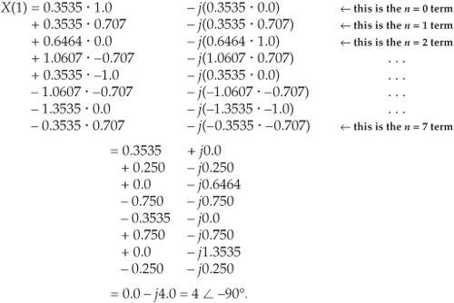
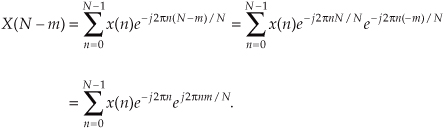
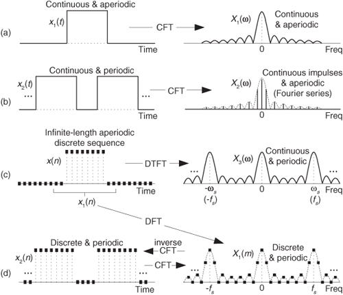
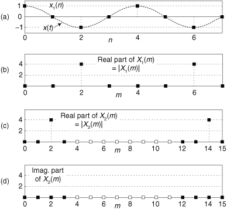

3 The Discrete Fourier Transform
The discrete Fourier transform (DFT) is one of the two most common, and powerful, procedures encountered in the field of digital signal processing. (Digital filtering is the other.) The DFT enables us to analyze, manipulate, and synthesize signals in ways not possible with continuous (analog) signal processing. Even though it’s now used in almost every field of engineering, we’ll see applications for DFT continue to flourish as its utility becomes more widely understood. Because of this, a solid understanding of the DFT is mandatory for anyone working in the field of digital signal processing.
The DFT is a mathematical procedure used to determine the harmonic, or frequency, content of a discrete signal sequence. Although, for our purposes, a discrete signal sequence is a set of values obtained by periodic sampling of a continuous signal in the time domain, we’ll find that the DFT is useful in analyzing any discrete sequence regardless of what that sequence actually represents. The DFT’s origin, of course, is the continuous Fourier transform X(f) defined as
where x(t) is some continuous time-domain signal.†
† Fourier is pronounced ‘for-y . In engineering school, we called Eq. (3-1) the “four-year” transform because it took about four years to do one homework problem.
. In engineering school, we called Eq. (3-1) the “four-year” transform because it took about four years to do one homework problem.
In the field of continuous signal processing, Eq. (3-1) is used to transform an expression of a continuous time-domain function x(t) into a continuous frequency-domain function X(f). Subsequent evaluation of the X(f) expression enables us to determine the frequency content of any practical signal of interest and opens up a wide array of signal analysis and processing possibilities in the fields of engineering and physics. One could argue that the Fourier transform is the most dominant and widespread mathematical mechanism available for the analysis of physical systems. (A prominent quote from Lord Kelvin better states this sentiment: “Fourier’s theorem is not only one of the most beautiful results of modern analysis, but it may be said to furnish an indispensable instrument in the treatment of nearly every recondite question in modern physics.” By the way, the history of Fourier’s original work in harmonic analysis, relating to the problem of heat conduction, is fascinating. References [1] and [2] are good places to start for those interested in the subject.)
With the advent of the digital computer, the efforts of early digital processing pioneers led to the development of the DFT defined as the discrete frequency-domain sequence X(m), where
For our discussion of Eq. (3-2), x(n) is a discrete sequence of time-domain sampled values of the continuous variable x(t). The “e” in Eq. (3-2) is, of course, the base of natural logarithms and  .
.
3.1 Understanding the DFT Equation
Equation (3-2) has a tangled, almost unfriendly, look about it. Not to worry. After studying this chapter, Eq. (3-2) will become one of our most familiar and powerful tools in understanding digital signal processing. Let’s get started by expressing Eq. (3-2) in a different way and examining it carefully. From Euler’s relationship, e−jø = cos(ø) −jsin(ø), Eq. (3-2) is equivalent to
We have separated the complex exponential of Eq. (3-2) into its real and imaginary components where
X(m) = the mth DFT output component, i.e., X(0), X(1), X(2), X(3), etc.,
m = the index of the DFT output in the frequency domain, m = 0, 1, 2, 3, . . ., N−1,
x(n) = the sequence of input samples, x(0), x(1), x(2), x(3), etc.,
n = the time-domain index of the input samples, n = 0, 1, 2, 3, . . ., N−1,
, and
N = the number of samples of the input sequence and the number of frequency points in the DFT output.
Although it looks more complicated than Eq. (3-2), Eq. (3-3) turns out to be easier to understand. (If you’re not too comfortable with it, don’t let the concept bother you too much. It’s merely a convenient abstraction that helps us compare the phase relationship between various sinusoidal components of a signal. Chapter 8 discusses the j operator in some detail.)† The indices for the input samples (n) and the DFT output samples (m) always go from 0 to N−1 in the standard DFT notation. This means that with N input time-domain sample values, the DFT determines the spectral content of the input at N equally spaced frequency points. The value N is an important parameter because it determines how many input samples are needed, the resolution of the frequency-domain results, and the amount of processing time necessary to calculate an N-point DFT.
† Instead of the letter j, be aware that mathematicians often use the letter i to represent the  operator.
operator.
It’s useful to see the structure of Eq. (3-3) by eliminating the summation and writing out all the terms. For example, when N = 4, n and m both go from 0 to 3, and Eq. (3-3) becomes
Writing out all the terms for the first DFT output term corresponding to m = 0,
For the second DFT output term corresponding to m = 1, Eq. (3-4a) becomes
For the third output term corresponding to m = 2, Eq. (3-4a) becomes
Finally, for the fourth and last output term corresponding to m = 3, Eq. (3-4a) becomes
The above multiplication symbol “·” in Eq. (3-4) is used merely to separate the factors in the sine and cosine terms. The pattern in Eqs. (3-4b) through (3-4e) is apparent now, and we can certainly see why it’s convenient to use the summation sign in Eq. (3-3). Each X(m) DFT output term is the sum of the point-for-point product between an input sequence of signal values and a complex sinusoid of the form cos(ø) − jsin(ø). The exact frequencies of the different sinusoids depend on both the sampling rate fs at which the original signal was sampled, and the number of samples N. For example, if we are sampling a continuous signal at a rate of 500 samples/second and, then, perform a 16-point DFT on the sampled data, the fundamental frequency of the sinusoids is fs/N = 500/16 or 31.25 Hz. The other X(m) analysis frequencies are integral multiples of the fundamental frequency, i.e.,
X(0) = 1st frequency term, with analysis frequency = 0 · 31.25 = 0 Hz,
X(1) = 2nd frequency term, with analysis frequency = 1 · 31.25 = 31.25 Hz,
X(2) = 3rd frequency term, with analysis frequency = 2 · 31.25 = 62.5 Hz,
X(3) = 4th frequency term, with analysis frequency = 3 · 31.25 = 93.75 Hz,
. . .
. . .
X(15) = 16th frequency term, with analysis frequency = 15 · 31.25 = 468.75 Hz.
The N separate DFT analysis frequencies are
So, in this example, the X(0) DFT term tells us the magnitude of any 0 Hz DC (direct current) component contained in the input signal, the X(1) term specifies the magnitude of any 31.25 Hz component in the input signal, and the X(2) term indicates the magnitude of any 62.5 Hz component in the input signal, etc. Moreover, as we’ll soon show by example, the DFT output terms also determine the phase relationship between the various analysis frequencies contained in an input signal.
Quite often we’re interested in both the magnitude and the power (magnitude squared) contained in each X(m) term, and the standard definitions for right triangles apply here as depicted in Figure 3-1.
Figure 3-1 Trigonometric relationships of an individual DFT X(m) complex output value.
If we represent an arbitrary DFT output value, X(m), by its real and imaginary parts
the magnitude of X(m) is
By definition, the phase angle of X(m), Xø(m), is
The power of X(m), referred to as the power spectrum, is the magnitude squared where
3.1.1 DFT Example 1
The above Eqs. (3-2) and (3-3) will become more meaningful by way of an example, so let’s go through a simple one step by step. Let’s say we want to sample and perform an 8-point DFT on a continuous input signal containing components at 1 kHz and 2 kHz, expressed as
To make our example input signal xin(t) a little more interesting, we have the 2 kHz term shifted in phase by 135° (3π/4 radians) relative to the 1 kHz sinewave. With a sample rate of fs, we sample the input every 1/fs = ts seconds. Because N = 8, we need 8 input sample values on which to perform the DFT. So the 8-element sequence x(n) is equal to xin(t) sampled at the nts instants in time so that
If we choose to sample xin(t) at a rate of fs = 8000 samples/second from Eq. (3-5), our DFT results will indicate what signal amplitude exists in x(n) at the analysis frequencies of mfs/N, or 0 kHz, 1 kHz, 2 kHz, . . ., 7 kHz. With fs = 8000 samples/second, our eight x(n) samples are
These x(n) sample values are the dots plotted on the solid continuous xin(t) curve in Figure 3-2(a). (Note that the sum of the sinusoidal terms in Eq. (3-10), shown as the dashed curves in Figure 3-2(a), is equal to xin(t).)
Figure 3-2 DFT Example 1: (a) the input signal; (b) the input signal and the m = 1 sinusoids; (c) the input signal and the m = 2 sinusoids; (d) the input signal and the m = 3 sinusoids.
Now we’re ready to apply Eq. (3-3) to determine the DFT of our x(n) input. We’ll start with m = 1 because the m = 0 case leads to a special result that we’ll discuss shortly. So, for m = 1, or the 1 kHz (mfs/N = 1·8000/8) DFT frequency term, Eq. (3-3) for this example becomes
Next we multiply x(n) by successive points on the cosine and sine curves of the first analysis frequency that have a single cycle over our eight input samples. In our example, for m = 1, we’ll sum the products of the x(n) sequence with a 1 kHz cosine wave and a 1 kHz sinewave evaluated at the angular values of 2πn/8. Those analysis sinusoids are shown as the dashed curves in Figure 3-2(b). Notice how the cosine and sinewaves have m = 1 complete cycles in our sample interval.
Substituting our x(n) sample values into Eq. (3-12) and listing the cosine terms in the left column and the sine terms in the right column, we have

So we now see that the input x(n) contains a signal component at a frequency of 1 kHz. Using Eqs. (3-7), (3-8), and (3-9) for our X(1) result, Xmag(1) = 4, XPS(1) = 16, and X(1)’s phase angle relative to a 1 kHz cosine is Xø(1) = −90°.
For the m = 2 frequency term, we correlate x(n) with a 2 kHz cosine wave and a 2 kHz sinewave. These waves are the dashed curves in Figure 3-2(c). Notice here that the cosine and sinewaves have m = 2 complete cycles in our sample interval in Figure 3-2(c). Substituting our x(n) sample values in Eq. (3-3) for m = 2 gives
Here our input x(n) contains a signal at a frequency of 2 kHz whose relative amplitude is 2, and whose phase angle relative to a 2 kHz cosine is 45°. For the m = 3 frequency term, we correlate x(n) with a 3 kHz cosine wave and a 3 kHz sinewave. These waves are the dashed curves in Figure 3-2(d). Again, see how the cosine and sinewaves have m = 3 complete cycles in our sample interval in Figure 3-2(d). Substituting our x(n) sample values in Eq. (3-3) for m = 3 gives
Our DFT indicates that x(n) contained no signal at a frequency of 3 kHz. Let’s continue our DFT for the m = 4 frequency term using the sinusoids in Figure 3-3(a).
Figure 3-3 DFT Example 1: (a) the input signal and the m = 4 sinusoids; (b) the input and the m = 5 sinusoids; (c) the input and the m = 6 sinusoids; (d) the input and the m = 7 sinusoids.
So Eq. (3-3) is
Our DFT for the m = 5 frequency term using the sinusoids in Figure 3-3(b) yields
For the m = 6 frequency term using the sinusoids in Figure 3-3(c), Eq. (3-3) is
For the m = 7 frequency term using the sinusoids in Figure 3-3(d), Eq. (3-3) is
If we plot the X(m) output magnitudes as a function of frequency, we produce the magnitude spectrum of the x(n) input sequence, shown in Figure 3-4(a). The phase angles of the X(m) output terms are depicted in Figure 3-4(b).
Figure 3-4 DFT results from Example 1: (a) magnitude of X(m); (b) phase of X(m); (c) real part of X(m); (d) imaginary part of X(m).
Hang in there; we’re almost finished with our example. We’ve saved the calculation of the m = 0 frequency term to the end because it has a special significance. When m = 0, we correlate x(n) with cos(0) − jsin(0) so that Eq. (3-3) becomes
Because cos(0) = 1, and sin(0) = 0,
We can see that Eq. (3-13′) is the sum of the x(n) samples. This sum is, of course, proportional to the average of x(n). (Specifically, X(0) is equal to N times x(n)’s average value.) This makes sense because the X(0) frequency term is the non-time-varying (DC) component of x(n). If X(0) were nonzero, this would tell us that the x(n) sequence is riding on a DC bias and has some nonzero average value. For our specific example input from Eq. (3-10), the sum, however, is zero. The input sequence has no DC component, so we know that X(0) will be zero. But let’s not be lazy—we’ll calculate X(0) anyway just to be sure. Evaluating Eq. (3-3) or Eq. (3-13′) for m = 0, we see that
So our x(n) had no DC component, and, thus, its average value is zero. Notice that Figure 3-4 indicates that xin(t), from Eq. (3-10), has signal components at 1 kHz (m = 1) and 2 kHz (m = 2). Moreover, the 1 kHz tone has a magnitude twice that of the 2 kHz tone. The DFT results depicted in Figure 3-4 tell us exactly the spectral content of the signal defined by Eqs. (3-10) and (3-11).
While looking at Figure 3-4(b), we might notice that the phase of X(1) is −90 degrees and ask, “This −90 degrees phase is relative to what?” The answer is: The DFT phase at the frequency mfs/N is relative to a cosine wave at that same frequency of mfs/N Hz where m = 1, 2, 3, ..., N−1. For example, the phase of X(1) is −90 degrees, so the input sinusoid whose frequency is 1 · fs/N = 1000 Hz was a cosine wave having an initial phase shift of −90 degrees. From the trigonometric identity cos(α−90°) = sin(α), we see that the 1000 Hz input tone was a sinewave having an initial phase of zero. This agrees with our Eq. (3-11). The phase of X(2) is 45 degrees so the 2000 Hz input tone was a cosine wave having an initial phase of 45 degrees, which is equivalent to a sinewave having an initial phase of 135 degrees (3π/4 radians from Eq. (3-11)).
When the DFT input signals are real-valued, the DFT phase at 0 Hz (m = 0, DC) is always zero because X(0) is always real-only as shown by Eq. (3-13′).
The perceptive reader should be asking two questions at this point. First, what do those nonzero magnitude values at m = 6 and m = 7 in Figure 3-4(a) mean? Also, why do the magnitudes seem four times larger than we would expect? We’ll answer those good questions shortly. The above 8-point DFT example, although admittedly simple, illustrates two very important characteristics of the DFT that we should never forget. First, any individual X(m) output value is nothing more than the sum of the term-by-term products, a correlation, of an input signal sample sequence with a cosine and a sinewave whose frequencies are m complete cycles in the total sample interval of N samples. This is true no matter what the fs sample rate is and no matter how large N is in an N-point DFT. The second important characteristic of the DFT of real input samples is the symmetry of the DFT output terms.
3.2 DFT Symmetry
Looking at Figure 3-4(a) again, we see that there is an obvious symmetry in the DFT results. Although the standard DFT is designed to accept complex input sequences, most physical DFT inputs (such as digitized values of some continuous signal) are referred to as real; that is, real inputs have nonzero real sample values, and the imaginary sample values are assumed to be zero. When the input sequence x(n) is real, as it will be for all of our examples, the complex DFT outputs for m = 1 to m = (N/2) − 1 are redundant with frequency output values for m > (N/2). The mth DFT output will have the same magnitude as the (N−m)th DFT output. The phase angle of the DFT’s mth output is the negative of the phase angle of the (N−m)th DFT output. So the mth and (N−m)th outputs are related by the following
for 1 ≤ m ≤ (N/2)−1. We can state that when the DFT input sequence is real, X(m) is the complex conjugate of X(N−m), or
† Using our notation, the complex conjugate of x = a + jb is defined as x* = a − jb; that is, we merely change the sign of the imaginary part of x. In an equivalent form, if x = ejø, then x* = e−jø.
where the superscript “*” symbol denotes conjugation, and m = 1, 2, 3, . . . , N−1.
In our example above, notice in Figures 3-4(b) and 3-4(d) that X(5), X(6), and X(7) are the complex conjugates of X(3), X(2), and X(1), respectively. Like the DFT’s magnitude symmetry, the real part of X(m) has what is called even symmetry, as shown in Figure 3-4(c), while the DFT’s imaginary part has odd symmetry, as shown in Figure 3-4(d). This relationship is what is meant when the DFT is called conjugate symmetric in the literature. It means that if we perform an N-point DFT on a real input sequence, we’ll get N separate complex DFT output terms, but only the first N/2+1 terms are independent. So to obtain the DFT of x(n), we need only compute the first N/2+1 values of X(m) where 0 ≤ m ≤ (N/2); the X(N/2+1) to X(N−1) DFT output terms provide no additional information about the spectrum of the real sequence x(n).
The above N-point DFT symmetry discussion applies to DFTs, whose inputs are real-valued, where N is an even number. If N happens to be an odd number, then only the first (N+1)/2 samples of the DFT are independent. For example, with a 9-point DFT only the first five DFT samples are independent.
Although Eqs. (3-2) and (3-3) are equivalent, expressing the DFT in the exponential form of Eq. (3-2) has a terrific advantage over the form of Eq. (3-3). Not only does Eq. (3-2) save pen and paper, but Eq. (3-2)’s exponentials are much easier to manipulate when we’re trying to analyze DFT relationships. Using Eq. (3-2), products of terms become the addition of exponents and, with due respect to Euler, we don’t have all those trigonometric relationships to memorize. Let’s demonstrate this by proving Eq. (3-14) to show the symmetry of the DFT of real input sequences. Substituting N−m for m in Eq. (3-2), we get the expression for the (N−m)th component of the DFT:

Because e−j2πn = cos(2πn) −jsin(2πn) = 1 for all integer values of n,
We see that X(N−m) in Eq. (3-15′) is merely X(m) in Eq. (3-2) with the sign reversed on X(m)’s exponent—and that’s the definition of the complex conjugate. This is illustrated by the DFT output phase-angle plot in Figure 3-4(b) for our DFT Example 1. Try deriving Eq. (3-15′) using the cosines and sines of Eq. (3-3), and you’ll see why the exponential form of the DFT is so convenient for analytical purposes.
There’s an additional symmetry property of the DFT that deserves mention at this point. In practice, we’re occasionally required to determine the DFT of real input functions where the input index n is defined over both positive and negative values. If that real input function is even, then X(m) is always real and even; that is, if the real x(n) = x(−n), then, Xreal(m) is in general nonzero and Ximag(m) is zero. Conversely, if the real input function is odd, x(n) = −x(−n), then Xreal(m) is always zero and Ximag(m) is, in general, nonzero. This characteristic of input function symmetry is a property that the DFT shares with the continuous Fourier transform, and (don’t worry) we’ll cover specific examples of it later in Section 3.13 and in Chapter 5.
3.3 DFT Linearity
The DFT has a very important property known as linearity. This property states that the DFT of the sum of two signals is equal to the sum of the transforms of each signal; that is, if an input sequence x1(n) has a DFT X1(m) and another input sequence x2(n) has a DFT X2(m), then the DFT of the sum of these sequences xsum(n) = x1(n) + x2(n) is
This is certainly easy enough to prove. If we plug xsum(n) into Eq. (3-2) to get Xsum(m), then
Without this property of linearity, the DFT would be useless as an analytical tool because we could transform only those input signals that contain a single sinewave. The real-world signals that we want to analyze are much more complicated than a single sinewave.
3.4 DFT Magnitudes
The DFT Example 1 results of |X(1)| = 4 and |X(2)| = 2 may puzzle the reader because our input x(n) signal, from Eq. (3-11), had peak amplitudes of 1.0 and 0.5, respectively. There’s an important point to keep in mind regarding DFTs defined by Eq. (3-2). When a real input signal contains a sinewave component, whose frequency is less than half the fs sample rate, of peak amplitude Ao with an integral number of cycles over N input samples, the output magnitude of the DFT for that particular sinewave is Mr where
If the DFT input is a complex sinusoid of magnitude Ao (i.e., Aoej2πfnts) with an integer number of cycles over N samples, the Mc output magnitude of the DFT for that particular sinewave is
As stated in relation to Eq. (3-13′), if the DFT input was riding on a DC bias value equal to Do, the magnitude of the DFT’s X(0) output will be DoN.
Looking at the real input case for the 1000 Hz component of Eq. (3-11), Ao = 1 and N = 8, so that Mreal = 1 · 8/2 = 4, as our example shows. Equation (3-17) may not be so important when we’re using software or floating-point hardware to perform DFTs, but if we’re implementing the DFT with fixed-point hardware, we have to be aware that the output can be as large as N/2 times the peak value of the input. This means that, for real inputs, hardware memory registers must be able to hold values as large as N/2 times the maximum amplitude of the input sample values. We discuss DFT output magnitudes in further detail later in this chapter. The DFT magnitude expressions in Eqs. (3-17) and (3-17′) are why we occasionally see the DFT defined in the literature as
The 1/N scale factor in Eq. (3-18) makes the amplitudes of X′(m) equal to half the time-domain input sinusoid’s peak value at the expense of the additional division by N computation. Thus, hardware or software implementations of the DFT typically use Eq. (3-2) as opposed to Eq. (3-18). Of course, there are always exceptions. There are commercial software packages using
for the forward and inverse DFTs. (In Section 3.7, we discuss the meaning and significance of the inverse DFT.) The scale factors in Eqs. (3-18′) seem a little strange, but they’re used so that there’s no scale change when transforming in either direction. When analyzing signal spectra in practice, we’re normally more interested in the relative magnitudes rather than absolute magnitudes of the individual DFT outputs, so scaling factors aren’t usually that important to us.
3.5 DFT Frequency Axis
The frequency axis m of the DFT result in Figure 3-4 deserves our attention once again. Suppose we hadn’t previously seen our DFT Example 1, were given the eight input sample values, from Eq. (3-11′), and were asked to perform an 8-point DFT on them. We’d grind through Eq. (3-2) and obtain the X(m) values shown in Figure 3-4. Next we ask, “What’s the frequency of the highest magnitude component in X(m) in Hz?” The answer is not “1” kHz. The answer depends on the original sample rate fs. Without prior knowledge, we have no idea over what time interval the samples were taken, so we don’t know the absolute scale of the X(m) frequency axis. The correct answer to the question is to take fs and plug it into Eq. (3-5) with m = 1. Thus, if fs = 8000 samples/second, then the frequency associated with the largest DFT magnitude term is
If we said the sample rate fs was 75 samples/second, we’d know, from Eq. (3-5), that the frequency associated with the largest magnitude term is now
OK, enough of this—just remember that the DFT’s frequency spacing (resolution) is fs/N.
To recap what we’ve learned so far:
• Each DFT output term is the sum of the term-by-term products of an input time-domain sequence with sequences representing a sine and a cosine wave.
• For real inputs, an N-point DFT’s output provides only N/2+1 independent terms.
• The DFT is a linear operation.
• The magnitude of the DFT results is directly proportional to N.
• The DFT’s frequency resolution is fs/N.
It’s also important to realize, from Eq. (3-5), that X(N/2), when m = N/2, corresponds to half the sample rate, i.e., the folding (Nyquist) frequency fs/2.
3.6 DFT Shifting Theorem
There’s an important property of the DFT known as the shifting theorem. It states that a shift in time of a periodic x(n) input sequence manifests itself as a constant phase shift in the angles associated with the DFT results. (We won’t derive the shifting theorem equation here because its derivation is included in just about every digital signal processing textbook in print.) If we decide to sample x(n) starting at n equals some integer k, as opposed to n = 0, the DFT of those time-shifted sample values is Xshifted(m) where
Equation (3-19) tells us that if the point where we start sampling x(n) is shifted to the right by k samples, the DFT output spectrum of Xshifted(m) is X(m) with each of X(m)’s complex terms multiplied by the linear phase shift ej2πkm/N, which is merely a phase shift of 2πkm/N radians or 360km/N degrees. Conversely, if the point where we start sampling x(n) is shifted to the left by k samples, the spectrum of Xshifted(m) is X(m) multiplied by e−j2πkm/N. Let’s illustrate Eq. (3-19) with an example.
3.6.1 DFT Example 2
Suppose we sampled our DFT Example 1 input sequence later in time by k = 3 samples. Figure 3-5 shows the original input time function,
xin(t) = sin(2π1000t) + 0.5sin(2π2000t+3π/4).
Figure 3-5 Comparison of sampling times between DFT Example 1 and DFT Example 2.
We can see that Figure 3-5 is a continuation of Figure 3-2(a). Our new x(n) sequence becomes the values represented by the solid black dots in Figure 3-5 whose values are
Performing the DFT on Eq. (3-20), Xshifted(m) is
The values in Eq. (3-21) are illustrated as the dots in Figure 3-6. Notice that Figure 3-6(a) is identical to Figure 3-4(a). Equation (3-19) told us that the magnitude of Xshifted(m) should be unchanged from that of X(m). That’s a comforting thought, isn’t it? We wouldn’t expect the DFT magnitude of our original periodic xin(t) to change just because we sampled it over a different time interval. The phase of the DFT result does, however, change depending on the instant at which we started to sample xin(t).
Figure 3-6 DFT results from Example 2: (a) magnitude of Xshifted(m); (b) phase of Xshifted(m); (c) real part of Xshifted(m); (d) imaginary part of Xshifted(m).
By looking at the m = 1 component of Xshifted(m), for example, we can double-check to see that phase values in Figure 3-6(b) are correct. Using Eq. (3-19) and remembering that X(1) from DFT Example 1 had a magnitude of 4 at a phase angle of −90° (or −π/2 radians), k = 3 and N = 8 so that
So Xshifted(1) has a magnitude of 4 and a phase angle of π/4 or +45°, which is what we set out to prove using Eq. (3-19).
3.7 Inverse DFT
Although the DFT is the major topic of this chapter, it’s appropriate, now, to introduce the inverse discrete Fourier transform (IDFT). Typically we think of the DFT as transforming time-domain data into a frequency-domain representation. Well, we can reverse this process and obtain the original time-domain signal by performing the IDFT on the X(m) frequency-domain values. The standard expressions for the IDFT are
and equally,
Remember the statement we made in Section 3.1 that a discrete time-domain signal can be considered the sum of various sinusoidal analytical frequencies and that the X(m) outputs of the DFT are a set of N complex values indicating the magnitude and phase of each analysis frequency comprising that sum. Equations (3-23) and (3-23′) are the mathematical expressions of that statement. It’s very important for the reader to understand this concept. If we perform the IDFT by plugging our results from DFT Example 1 into Eq. (3-23), we’ll go from the frequency domain back to the time domain and get our original real Eq. (3-11′) x(n) sample values of
Notice that Eq. (3-23)’s IDFT expression differs from the DFT’s Eq. (3-2) only by a 1/N scale factor and a change in the sign of the exponent. Other than the magnitude of the results, every characteristic that we’ve covered thus far regarding the DFT also applies to the IDFT.
3.8 DFT Leakage
Hold on to your seat now. Here’s where the DFT starts to get really interesting. The two previous DFT examples gave us correct results because the input x(n) sequences were very carefully chosen sinusoids. As it turns out, the DFT of sampled real-world signals provides frequency-domain results that can be misleading. A characteristic known as leakage causes our DFT results to be only an approximation of the true spectra of the original input signals prior to digital sampling. Although there are ways to minimize leakage, we can’t eliminate it entirely. Thus, we need to understand exactly what effect it has on our DFT results.
Let’s start from the beginning. DFTs are constrained to operate on a finite set of N input values, sampled at a sample rate of fs, to produce an N-point transform whose discrete outputs are associated with the individual analytical frequencies fanalysis(m), with

Equation (3-24), illustrated in DFT Example 1, may not seem like a problem, but it is. The DFT produces correct results only when the input data sequence contains energy precisely at the analysis frequencies given in Eq. (3-24), at integral multiples of our fundamental frequency fs/N. If the input has a signal component at some intermediate frequency between our analytical frequencies of mfs/N, say 1.5fs/N, this input signal will show up to some degree in all of the N output analysis frequencies of our DFT! (We typically say that input signal energy shows up in all of the DFT’s output bins, and we’ll see, in a moment, why the phrase “output bins” is appropriate. Engineers often refer to DFT samples as “bins.” So when you see, or hear, the word bin it merely means a frequency-domain sample.) Let’s understand the significance of this problem with another DFT example.
Assume we’re taking a 64-point DFT of the sequence indicated by the dots in Figure 3-7(a). The sequence is a sinewave with exactly three cycles contained in our N = 64 samples. Figure 3-7(b) shows the first half of the DFT of the input sequence and indicates that the sequence has an average value of zero (X(0) = 0) and no signal components at any frequency other than the m = 3 frequency. No surprises so far. Figure 3-7(a) also shows, for example, the m = 4 sinewave analysis frequency, superimposed over the input sequence, to remind us that the analytical frequencies always have an integral number of cycles over our total sample interval of 64 points. The sum of the products of the input sequence and the m = 4 analysis frequency is zero. (Or we can say, the correlation of the input sequence and the m = 4 analysis frequency is zero.) The sum of the products of this particular three-cycle input sequence and any analysis frequency other than m = 3 is zero. Continuing with our leakage example, the dots in Figure 3-8(a) show an input sequence having 3.4 cycles over our N = 64 samples. Because the input sequence does not have an integral number of cycles over our 64-sample interval, input energy has leaked into all the other DFT output bins as shown in Figure 3-8(b). The m = 4 bin, for example, is not zero because the sum of the products of the input sequence and the m = 4 analysis frequency is no longer zero. This is leakage—it causes any input signal whose frequency is not exactly at a DFT bin center to leak into all of the other DFT output bins. Moreover, leakage is an unavoidable fact of life when we perform the DFT on real-world finite-length time sequences.
Figure 3-7 Sixty-four-point DFT: (a) input sequence of three cycles and the m = 4 analysis frequency sinusoid; (b) DFT output magnitude.
Figure 3-8 Sixty-four-point DFT: (a) 3.4 cycles input sequence and the m = 4 analysis frequency sinusoid; (b) DFT output magnitude.
Now, as the English philosopher Douglas Adams would say, “Don’t panic.” Let’s take a quick look at the cause of leakage to learn how to predict and minimize its unpleasant effects. To understand the effects of leakage, we need to know the amplitude response of a DFT when the DFT’s input is an arbitrary, real sinusoid. Although Sections 3.13 discusses this issue in detail, for our purposes, here, we’ll just say that for a real cosine input having k cycles (k need not be an integer) in the N-point input time sequence, the amplitude response of an N-point DFT bin in terms of the bin index m is approximated by the sinc function
where Ao is the peak value of the DFT’s input sinusiod. For our examples here, Ao is unity. We’ll use Eq. (3-25), illustrated in Figure 3-9(a), to help us determine how much leakage occurs in DFTs. We can think of the curve in Figure 3-9(a), comprising a main lobe and periodic peaks and valleys known as sidelobes, as the continuous positive spectrum of an N-point, real cosine time sequence having k cycles in the N-point input time interval. The DFT’s outputs are discrete samples that reside on the curves in Figure 3-9; that is, our DFT output will be a sampled version of the continuous spectrum. (We show the DFT’s magnitude response to a real input in terms of frequency (Hz) in Figure 3-9(b).) When the DFT’s input sequence has exactly an integral k number of cycles (centered exactly in the m = k bin), no leakage occurs, as in Figure 3-9, because when the angle in the numerator of Eq. (3-25) is a nonzero integral multiple of π, the sine of that angle is zero.
Figure 3-9 DFT positive-frequency response due to an N-point input sequence containing k cycles of a real cosine: (a) amplitude response as a function of bin index m; (b) magnitude response as a function of frequency in Hz.
By way of example, we can illustrate again what happens when the input frequency k is not located at a bin center. Assume that a real 8 kHz sinusoid, having unity amplitude, has been sampled at a rate of fs = 32000 samples/second. If we take a 32-point DFT of the samples, the DFT’s frequency resolution, or bin spacing, is fs/N = 32000/32 Hz = 1.0 kHz. We can predict the DFT’s magnitude response by centering the input sinusoid’s spectral curve at the positive frequency of 8 kHz, as shown in Figure 3-10(a). The dots show the DFT’s output bin magnitudes.
Figure 3-10 DFT bin positive-frequency responses: (a) DFT input frequency = 8.0 kHz; (b) DFT input frequency = 8.5 kHz; (c) DFT input frequency = 8.75 kHz.
Again, here’s the important point to remember: the DFT output is a sampled version of the continuous spectral curve in Figure 3-10(a). Those sampled values in the frequency domain, located at mfs/N, are the dots in Figure 3-10(a). Because the input signal frequency is exactly at a DFT bin center, the DFT results have only one nonzero value. Stated in another way, when an input sinusoid has an integral number of cycles over N time-domain input sample values, the DFT outputs reside on the continuous spectrum at its peak and exactly at the curve’s zero crossing points. From Eq. (3-25) we know the peak output magnitude is 32/2 = 16. (If the real input sinusoid had an amplitude of 2, the peak of the response curve would be 2 · 32/2, or 32.) Figure 3-10(b) illustrates DFT leakage where the input frequency is 8.5 kHz, and we see that the frequency-domain sampling results in nonzero magnitudes for all DFT output bins. An 8.75 kHz input sinusoid would result in the leaky DFT output shown in Figure 3-10(c). If we’re sitting at a computer studying leakage by plotting the magnitude of DFT output values, of course, we’ll get the dots in Figure 3-10 and won’t see the continuous spectral curves.
At this point, the attentive reader should be thinking: “If the continuous spectra that we’re sampling are symmetrical, why does the DFT output in Figure 3-8(b) look so asymmetrical?” In Figure 3-8(b), the bins to the right of the third bin are decreasing in amplitude faster than the bins to the left of the third bin. “And another thing, with k = 3.4 and m = 3, from Eq. (3-25) the X(3) bin’s magnitude should be approximately equal to 24.2—but Figure 3-8(b) shows the X(3) bin magnitude to be slightly greater than 25. What’s going on here?” We answer this by remembering what Figure 3-8(b) really represents. When examining a DFT output, we’re normally interested only in the m = 0 to m = (N/2−1) bins. Thus, for our 3.4 cycles per sample interval example in Figure 3-8(b), only the first 32 bins are shown. Well, the DFT is periodic in the frequency domain as illustrated in Figure 3-11. (We address this periodicity issue in Section 3.14.) Upon examining the DFT’s output for higher and higher frequencies, we end up going in circles, and the spectrum repeats itself forever.
Figure 3-11 Cyclic representation of the DFT’s spectral replication when the DFT input is 3.4 cycles per sample interval.
The more conventional way to view a DFT output is to unwrap the spectrum in Figure 3-11 to get the spectrum in Figure 3-12. Figure 3-12 shows some of the additional replications in the spectrum for the 3.4 cycles per sample interval example. Concerning our DFT output asymmetry problem, as some of the input 3.4-cycle signal amplitude leaks into the 2nd bin, the 1st bin, and the 0th bin, leakage continues into the −1st bin, the −2nd bin, the −3rd bin, etc. Remember, the 63rd bin is the −1st bin, the 62nd bin is the −2nd bin, and so on. These bin equivalencies allow us to view the DFT output bins as if they extend into the negative-frequency range, as shown in Figure 3-13(a). The result is that the leakage wraps around the m = 0 frequency bin, as well as around the m = N frequency bin. This is not surprising, because the m = 0 frequency is the m = N frequency. The leakage wraparound at the m = 0 frequency accounts for the asymmetry around the DFT’s m = 3 bin in Figure 3-8(b).
Figure 3-12 Spectral replication when the DFT input is 3.4 cycles per sample interval.
Figure 3-13 DFT output magnitude: (a) when the DFT input is 3.4 cycles per sample interval; (b) when the DFT input is 28.6 cycles per sample interval.

Recall from the DFT symmetry discussion that when a DFT input sequence x(n) is real, the DFT outputs from m = 0 to m = (N/2−1) are redundant with frequency bin values for m > (N/2), where N is the DFT size. The mth DFT output will have the same magnitude as the (N−m)th DFT output. That is, |X(m)| = |X(N−m)|. What this means is that leakage wraparound also occurs around the m = N/2 bin. This can be illustrated using an input of 28.6 cycles per sample interval (32 − 3.4) whose spectrum is shown in Figure 3-13(b). Notice the similarity between Figures 3-13(a) and 3-13(b). So the DFT exhibits leakage wraparound about the m = 0 and m = N/2 bins. Minimum leakage asymmetry will occur near the N/4th bin as shown in Figure 3-14(a) where the full spectrum of a 16.4 cycles per sample interval input is provided. Figure 3-14(b) shows a close-up view of the first 32 bins of the 16.4 cycles per sample interval spectrum.
Figure 3-14 DFT output magnitude when the DFT input is 16.4 cycles per sample interval: (a) full output spectrum view; (b) close-up view showing minimized leakage asymmetry at frequency m = N/4.
You could read about leakage all day. However, the best way to appreciate its effects is to sit down at a computer and use a software program to take DFTs, in the form of fast Fourier transforms (FFTs), of your personally generated test signals like those in Figures 3-7 and 3-8. You can then experiment with different combinations of input frequencies and various DFT sizes. You’ll be able to demonstrate that the DFT leakage effect is troublesome because the bins containing low-level signals are corrupted by the sidelobe levels from neighboring bins containing high-amplitude signals.
Although there’s no way to eliminate leakage completely, an important technique known as windowing is the most common remedy to reduce its unpleasant effects. Let’s look at a few DFT window examples.
3.9 Windows
Windowing reduces DFT leakage by minimizing the magnitude of Eq. (3-25)’s sinc function’s sin(x)/x sidelobes shown in Figure 3-9. We do this by forcing the amplitude of the input time sequence at both the beginning and the end of the sample interval to go smoothly toward a single common amplitude value. Figure 3-15 shows how this process works. If we consider the infinite-duration time signal shown in Figure 3-15(a), a DFT can only be performed over a finite-time sample interval like that shown in Figure 3-15(c). We can think of the DFT input signal in Figure 3-15(c) as the product of an input signal existing for all time, Figure 3-15(a), and the rectangular window whose magnitude is 1 over the sample interval shown in Figure 3-15(b). Anytime we take the DFT of a finite-extent input sequence, we are, by default, multiplying that sequence by a window of all ones and effectively multiplying the input values outside that window by zeros. As it turns out, Eq. (3-25)’s sinc function’s sin(x)/x shape, shown in Figure 3-9, is caused by this rectangular window because the continuous Fourier transform of the rectangular window in Figure 3-15(b) is the sinc function.
Figure 3-15 Minimizing sample interval end-point discontinuities: (a) infinite-duration input sinusoid; (b) rectangular window due to finite-time sample interval; (c) product of rectangular window and infinite-duration input sinusoid; (d) triangular window function; (e) product of triangular window and infinite-duration input sinusoid; (f) Hanning window function; (g) product of Hanning window and infinite-duration input sinusoid; (h) Hamming window function.
As we’ll soon see, it’s the rectangular window’s abrupt changes between one and zero that are the cause of the sidelobes in the the sin(x)/x sinc function. To minimize the spectral leakage caused by those sidelobes, we have to reduce the sidelobe amplitudes by using window functions other than the rectangular window. Imagine if we multiplied our DFT input, Figure 3-15(c), by the triangular window function shown in Figure 3-15(d) to obtain the windowed input signal shown in Figure 3-15(e). Notice that the values of our final input signal appear to be the same at the beginning and end of the sample interval in Figure 3-15(e). The reduced discontinuity decreases the level of relatively high-frequency components in our overall DFT output; that is, our DFT bin sidelobe levels are reduced in magnitude using a triangular window. There are other window functions that reduce leakage even more than the triangular window, such as the Hanning window in Figure 3-15(f). The product of the window in Figure 3-15(f) and the input sequence provides the signal shown in Figure 3-15(g) as the input to the DFT. Another common window function is the Hamming window shown in Figure 3-15(h). It’s much like the Hanning window, but it’s raised on a pedestal.
Before we see exactly how well these windows minimize DFT leakage, let’s define them mathematically. Assuming that our original N input signal samples are indexed by n, where 0 ≤ n ≤ N−1, we’ll call the N time-domain window coefficients w(n); that is, an input sequence x(n) is multiplied by the corresponding window w(n) coefficients before the DFT is performed. So the DFT of the windowed x(n) input sequence, Xw(m), takes the form of
To use window functions, we need mathematical expressions of them in terms of n. The following expressions define our window function coefficients:
If we plot the w(n) values from Eqs. (3-27) through (3-30), we’d get the corresponding window functions like those in Figures 3-15(b), 3-15(d), 3-15(f), and 3-15(h).†
† In the literature, the equations for window functions depend on the range of the sample index n. We define n to be in the range 0 < n < N−1. Some authors define n to be in the range −N/2 ≤ n ≤ N/2−1, in which case, for example, the expression for the Hanning window would have a sign change and be w(n) = 0.5 + 0.5cos(2πn/N).
The rectangular window’s amplitude response is the yardstick we normally use to evaluate another window function’s amplitude response; that is, we typically get an appreciation for a window’s response by comparing it to the rectangular window that exhibits the magnitude response shown in Figure 3-9(b). The rectangular window’s sin(x)/x magnitude response, |W(m)|, is repeated in Figure 3-16(a). Also included in Figure 3-16(a) are the Hamming, Hanning, and triangular window magnitude responses. (The frequency axis in Figure 3-16 is such that the curves show the response of a single N-point DFT bin when the various window functions are used.) We can see that the last three windows give reduced sidelobe levels relative to the rectangular window. Because the Hamming, Hanning, and triangular windows reduce the time-domain signal levels applied to the DFT, their main lobe peak values are reduced relative to the rectangular window. (Because of the near-zero w(n) coefficients at the beginning and end of the sample interval, this signal level loss is called the processing gain, or loss, of a window.) Be that as it may, we’re primarily interested in the windows’ sidelobe levels, which are difficult to see in Figure 3-16(a)’s linear scale. We will avoid this difficulty by plotting the windows’ magnitude responses on a logarithmic decibel scale, and normalize each plot so its main lobe peak values are zero dB. (Appendix E provides a discussion of the origin and utility of measuring frequency-domain responses on a logarithmic scale using decibels.) Defining the log magnitude response to be |WdB(m)|, we get |WdB(m)| by using the expression

Figure 3-16 Window magnitude responses: (a) |W(m)| on a linear scale; (b) |WdB(m)| on a normalized logarithmic scale.
(The |W(0)| term in the denominator of Eq. (3-31) is the value of W(m) at the peak of the main lobe when m = 0.) The |WdB(m)| curves for the various window functions are shown in Figure 3-16(b). Now we can really see how the various window sidelobe responses compare to each other.
Looking at the rectangular window’s magnitude response, we see that its main lobe is the most narrow, fs/N. However, unfortunately, its first sidelobe level is only −13 dB below the main lobe peak, which is not so good. (Notice that we’re only showing the positive-frequency portion of the window responses in Figure 3-16.) The triangular window has reduced sidelobe levels, but the price we’ve paid is that the triangular window’s main lobe width is twice as wide as that of the rectangular window’s. The various nonrectangular windows’ wide main lobes degrade the windowed DFT’s frequency resolution by almost a factor of two. However, as we’ll see, the important benefits of leakage reduction usually outweigh the loss in DFT frequency resolution.
Notice the further reduction of the first sidelobe level, and the rapid sidelobe roll-off of the Hanning window. The Hamming window has even lower first sidelobe levels, but this window’s sidelobes roll off slowly relative to the Hanning window. This means that leakage three or four bins away from the center bin is lower for the Hamming window than for the Hanning window, and leakage a half-dozen or so bins away from the center bin is lower for the Hanning window than for the Hamming window.
When we apply the Hanning window to Figure 3-8(a)’s 3.4 cycles per sample interval example, we end up with the DFT input shown in Figure 3-17(a) under the Hanning window envelope. The DFT outputs for the windowed waveform are shown in Figure 3-17(b) along with the DFT results with no windowing, i.e., the rectangular window. As we expected, the shape of the Hanning window’s response looks broader and has a lower peak amplitude, but its sidelobe leakage is noticeably reduced from that of the rectangular window.
Figure 3-17 Hanning window: (a) 64-sample product of a Hanning window and a 3.4 cycles per sample interval input sinewave; (b) Hanning DFT output response versus rectangular window DFT output response.
We can demonstrate the benefit of using a window function to help us detect a low-level signal in the presence of a nearby high-level signal. Let’s add 64 samples of a 7 cycles per sample interval sinewave, with a peak amplitude of only 0.1, to Figure 3-8(a)’s unity-amplitude 3.4 cycles per sample sinewave. When we apply a Hanning window to the sum of these sinewaves, we get the time-domain input shown in Figure 3-18(a). Had we not windowed the input data, our DFT output would be the squares in Figure 3-18(b) where DFT leakage causes the input signal component at m = 7 to be barely discernible. However, the DFT of the windowed data shown as the triangles in Figure 3-18(b) makes it easier for us to detect the presence of the m = 7 signal component. From a practical standpoint, people who use the DFT to perform real-world signal detection have learned that their overall frequency resolution and signal sensitivity are affected much more by the size and shape of their window function than the mere size of their DFTs.
Figure 3-18 Increased signal detection sensitivity afforded using windowing: (a) 64-sample product of a Hanning window and the sum of a 3.4 cycles and a 7 cycles per sample interval sinewaves; (b) reduced leakage Hanning DFT output response versus rectangular window DFT output response.
As we become more experienced using window functions on our DFT input data, we’ll see how different window functions have their own individual advantages and disadvantages. Furthermore, regardless of the window function used, we’ve decreased the leakage in our DFT output from that of the rectangular window. There are many different window functions described in the literature of digital signal processing—so many, in fact, that they’ve been named after just about everyone in the digital signal processing business. It’s not that clear that there’s a great deal of difference among many of these window functions. What we find is that window selection is a trade-off between main lobe widening, first sidelobe levels, and how fast the sidelobes decrease with increased frequency. The use of any particular window depends on the application[5], and there are many applications.
Windows are used to improve DFT spectrum analysis accuracy[6], to design digital filters[7,8], to simulate antenna radiation patterns, and even in the hardware world to improve the performance of certain mechanical force to voltage conversion devices[9]. So there’s plenty of window information available for those readers seeking further knowledge. (The mother of all technical papers on windows is that by Harris[10]. A useful paper by Nuttall corrected and extended some portions of Harris’s paper[11].) Again, the best way to appreciate windowing effects is to have access to a computer software package that contains DFT, or FFT, routines and start analyzing windowed signals. (By the way, while we delayed their discussion until Section 5.3, there are two other commonly used window functions that can be used to reduce DFT leakage. They’re the Chebyshev and Kaiser window functions, which have adjustable parameters, enabling us to strike a compromise between widening main lobe width and reducing sidelobe levels.)
3.10 DFT Scalloping Loss
Scalloping is the name used to describe fluctuations in the overall magnitude response of an N-point DFT. Although we derive this fact in Section 3.16, for now we’ll just say that when no input windowing function is used, the sin(x)/x shape of the sinc function’s magnitude response applies to each DFT output bin. Figure 3-19(a) shows a DFT’s aggregate magnitude response by superimposing several sin(x)/x bin magnitude responses.† (Because the sinc function’s sidelobes are not key to this discussion, we don’t show them in Figure 3-19(a).) Notice from Figure 3-19(b) that the overall DFT frequency-domain response is indicated by the bold envelope curve. This rippled curve, also called the picket fence effect, illustrates the processing loss for input frequencies between the bin centers.
† Perhaps Figure 3-19(a) is why individual DFT outputs are called “bins.” Any signal energy under a sin(x)/x curve will show up in the enclosed storage compartment of that DFT’s output sample.
Figure 3-19 DFT bin magnitude response curves: (a) individual sin(x)/x responses for each DFT bin; (b) equivalent overall DFT magnitude response.
From Figure 3-19(b), we can determine that the magnitude of the DFT response fluctuates from 1.0, at bin center, to 0.637 halfway between bin centers. If we’re interested in DFT output power levels, this envelope ripple exhibits a scalloping loss of almost −4 dB halfway between bin centers. Figure 3-19 illustrates a DFT output when no window (i.e., a rectangular window) is used. Because nonrectangular window functions broaden the DFT’s main lobe, their use results in a scalloping loss that will not be as severe as with the rectangular window[10,12]. That is, their wider main lobes overlap more and fill in the valleys of the envelope curve in Figure 3-19(b). For example, the scalloping loss of a Hanning window is approximately 0.82, or −1.45 dB, halfway between bin centers. Scalloping loss is not, however, a severe problem in practice. Real-world signals normally have bandwidths that span many frequency bins so that DFT magnitude response ripples can go almost unnoticed. Let’s look at a scheme called zero padding that’s used to both alleviate scalloping loss effects and to improve the DFT’s frequency granularity.
3.11 DFT Resolution, Zero Padding, and Frequency-Domain Sampling
One popular method used to improve DFT spectral estimation is known as zero padding. This process involves the addition of zero-valued data samples to an original DFT input sequence to increase the total number of input data samples. Investigating this zero-padding technique illustrates the DFT’s important property of frequency-domain sampling alluded to in the discussion on leakage. When we sample a continuous time-domain function, having a continuous Fourier transform (CFT), and take the DFT of those samples, the DFT results in a frequency-domain sampled approximation of the CFT. The more points in our DFT, the better our DFT output approximates the CFT.
To illustrate this idea, suppose we want to approximate the CFT of the continuous f(t) function in Figure 3-20(a). This f(t) waveform extends to infinity in both directions but is nonzero only over the time interval of T seconds. If the nonzero portion of the time function is a sinewave of three cycles in T seconds, the magnitude of its CFT is shown in Figure 3-20(b). (Because the CFT is taken over an infinitely wide time interval, the CFT has infinitesimally small frequency resolution, resolution so fine-grained that it’s continuous.) It’s this CFT that we’ll approximate with a DFT.
Figure 3-20 Continuous Fourier transform: (a) continuous time-domain f(t) of a truncated sinusoid of frequency 3/T; (b) continuous Fourier transform of f(t).
Suppose we want to use a 16-point DFT to approximate the CFT of f(t) in Figure 3-20(a). The 16 discrete samples of f(t), spanning the three periods of f(t)’s sinusoid, are those shown on the left side of Figure 3-21(a). Applying those time samples to a 16-point DFT results in discrete frequency-domain samples, the positive frequencies of which are represented by the dots on the right side of Figure 3-21(a). We can see that the DFT output comprises samples of Figure 3-20(b)’s CFT. If we append (or zero-pad) 16 zeros to the input sequence and take a 32-point DFT, we get the output shown on the right side of Figure 3-21(b), where we’ve increased our DFT frequency sampling by a factor of two. Our DFT is sampling the input function’s CFT more often now. Adding 32 more zeros and taking a 64-point DFT, we get the output shown on the right side of Figure 3-21(c). The 64-point DFT output now begins to show the true shape of the CFT. Adding 64 more zeros and taking a 128-point DFT, we get the output shown on the right side of Figure 3-21(d). The DFT frequency-domain sampling characteristic is obvious now, but notice that the bin index for the center of the main lobe is different for each of the DFT outputs in Figure 3-21.
Figure 3-21 DFT frequency-domain sampling: (a) 16 input data samples and N = 16; (b) 16 input data samples, 16 padded zeros, and N = 32; (c) 16 input data samples, 48 padded zeros, and N = 64; (d) 16 input data samples, 112 padded zeros, and N = 128.
Does this mean we have to redefine the DFT’s frequency axis when using the zero-padding technique? Not really. If we perform zero padding on L nonzero input samples to get a total of N time samples for an N-point DFT, the zero-padded DFT output bin center frequencies are related to the original fs by our old friend Eq. (3-5), or
So in our Figure 3-21(a) example, we use Eq. (3-32) to show that although the zero-padded DFT output bin index of the main lobe changes as N increases, the zero-padded DFT output frequency associated with the main lobe remains the same. The following list shows how this works:
Do we gain anything by appending more zeros to the input sequence and taking larger DFTs? Not really, because our 128-point DFT is sampling the input’s CFT sufficiently now in Figure 3-21(d). Sampling it more often with a larger DFT won’t improve our understanding of the input’s frequency content. The issue here is that adding zeros to an input sequence will improve our DFT’s output resolution, but there’s a practical limit on how much we gain by adding more zeros. For our example here, a 128-point DFT shows us the detailed content of the input spectrum. We’ve hit a law of diminishing returns here. Performing a 256-point or 512-point DFT, in our case, would serve little purpose.† There’s no reason to oversample this particular input sequence’s CFT. Of course, there’s nothing sacred about stopping at a 128-point DFT. Depending on the number of samples in some arbitrary input sequence and the sample rate, we might, in practice, need to append any number of zeros to get some desired DFT frequency resolution.
† Notice that the DFT sizes (N) we’ve discussed are powers of 2 (64, 128, 256, 512). That’s because we actually perform DFTs using a special algorithm known as the fast Fourier transform (FFT). As we’ll see in Chapter 4, the typical implementation of the FFT requires that N be a power of two.
There are two final points to be made concerning zero padding. First, the DFT magnitude expressions in Eqs. (3-17) and (3-17′) don’t apply if zero padding is being used. If we perform zero padding on L nonzero samples of a sinusoid whose frequency is located at a bin center to get a total of N input samples for an N-point DFT, we must replace the N with L in Eqs. (3-17) and (3-17′) to predict the DFT’s output magnitude for that particular sinewave. Second, in practical situations, if we want to perform both zero padding and windowing on a sequence of input data samples, we must be careful not to apply the window to the entire input including the appended zero-valued samples. The window function must be applied only to the original nonzero time samples; otherwise the padded zeros will zero out and distort part of the window function, leading to erroneous results. (Section 4.2 gives additional practical pointers on performing the DFT using the FFT algorithm to analyze real-world signals.)
To digress slightly, now’s a good time to define the term discrete-time Fourier transform (DTFT) which the reader may encounter in the literature. The DTFT is the continuous Fourier transform of an L-point discrete time-domain sequence, and some authors use the DTFT to describe many of the digital signal processing concepts we’ve covered in this chapter. On a computer we can’t perform the DTFT because it has an infinitely fine frequency resolution—but we can approximate the DTFT by performing an N-point DFT on an L-point discrete time sequence where N > L. That is, in fact, what we did in Figure 3-21 when we zero-padded the original 16-point time sequence. (When N = L, the DTFT approximation is identical to the DFT.)
To make the connection between the DTFT and the DFT, know that the infinite-resolution DTFT magnitude (i.e., continuous Fourier transform magnitude) of the 16 nonzero time samples in Figure 3-21(a) is the shaded sin(x)/x-like spectral function in Figure 3-21. Our DFTs approximate (sample) that function. Increased zero padding of the 16 nonzero time samples merely interpolates our DFT’s sampled version of the DTFT function with smaller and smaller frequency-domain sample spacing.
Please keep in mind, however, that zero padding does not improve our ability to resolve, to distinguish between, two closely spaced signals in the frequency domain. (For example, the main lobes of the various spectra in Figure 3-21 do not change in width, if measured in Hz, with increased zero padding.) To improve our true spectral resolution of two signals, we need more nonzero time samples. The rule by which we must live is: To realize Fres Hz spectral resolution, we must collect 1/Fres seconds, worth of nonzero time samples for our DFT processing.
We’ll discuss applications of time-domain zero padding in Section 13.15, revisit the DTFT in Section 3.14, and frequency-domain zero padding in Section 13.28.
3.12 DFT Processing Gain
There are two types of processing gain associated with DFTs. People who use the DFT to detect signal energy embedded in noise often speak of the DFT’s processing gain because the DFT can pull signals out of background noise. This is due to the inherent correlation gain that takes place in any N-point DFT. Beyond this natural processing gain, additional integration gain is possible when multiple DFT outputs are averaged. Let’s look at the DFT’s inherent processing gain first.
3.12.1 Processing Gain of a Single DFT
The concept of the DFT having processing gain is straightforward if we think of a particular DFT bin output as the output of a narrowband filter. Because a DFT output bin has the amplitude response of the sin(x)/x function, that bin’s output is primarily due to input energy residing under, or very near, the bin’s main lobe. It’s valid to think of a DFT bin as a kind of bandpass filter whose band center is located at mfs/N. We know from Eq. (3-17) that the maximum possible DFT output magnitude increases as the number of points (N) in a DFT increases. Also, as N increases, the DFT output bin main lobes become narrower. So a DFT output bin can be treated as a bandpass filter whose gain can be increased and whose bandwidth can be reduced by increasing the value of N. Decreasing a bandpass filter’s bandwidth is useful in energy detection because the frequency resolution improves in addition to the filter’s ability to minimize the amount of background noise that resides within its passband. We can demonstrate this by looking at the DFT of a spectral tone (a constant-frequency sinewave) added to random noise. Figure 3-22(a) is a logarithmic plot showing the first 32 outputs of a 64-point DFT when the input tone is at the center of the DFT’s m = 20th bin. The output power levels (DFT magnitude squared) in Figure 3-22(a) are normalized so that the highest bin output power is set to 0 dB. Because the tone’s original signal power is below the average noise power level, the tone is a bit difficult to detect when N = 64. (The time-domain noise, used to generate Figure 3-22(a), has an average value of zero, i.e., no DC bias or amplitude offset.) If we quadruple the number of input samples and increase the DFT size to N = 256, we can now see the tone power raised above the average background noise power as shown for m = 80 in Figure 3-22(b). Increasing the DFT’s size to N = 1024 provides additional processing gain to pull the tone further up out of the noise as shown in Figure 3-22(c).
Figure 3-22 Single DFT processing gain: (a) N = 64; (b) N = 256; (c) N = 1024.
To quantify the idea of DFT processing gain, we can define a signal-to-noise ratio (SNR) as the DFT’s output signal-power level over the average output noise-power level. (In practice, of course, we like to have this ratio as large as possible.) For several reasons, it’s hard to say what any given single DFT output SNR will be. That’s because we can’t exactly predict the energy in any given N samples of random noise. Also, if the input signal frequency is not at bin center, leakage will raise the effective background noise and reduce the DFT’s output SNR. In addition, any window being used will have some effect on the leakage and, thus, on the output SNR. What we’ll see is that the DFT’s output SNR increases as N gets larger because a DFT bin’s output noise standard deviation (rms) value is proportional to , and the DFT’s output magnitude for the bin containing the signal tone is proportional to N.† More generally for real inputs, if N > N′, an N-point DFT’s output SNRN increases over the N′-point DFT SNRN by the following relationship:
† rms = root mean square.
If we increase a DFT’s size from N′ to N = 2N′, from Eq. (3-33), the DFT’s output SNR increases by 3 dB. So we say that a DFT’s processing gain increases by 3 dB whenever N is doubled. Be aware that we may double a DFT’s size and get a resultant processing gain of less than 3 dB in the presence of random noise; then again, we may gain slightly more than 3 dB. That’s the nature of random noise. If we perform many DFTs, we’ll see an average processing gain, shown in Figure 3-23(a), for various input signal SNRs. Because we’re interested in the slope of the curves in Figure 3-23(a), we plot those curves on a logarithmic scale for N in Figure 3-23(b) where the curves straighten out and become linear. Looking at the slope of the curves in Figure 3-23(b), we can now see the 3 dB increase in processing gain as N doubles so long as N is greater than 20 or 30 and the signal is not overwhelmed by noise. There’s nothing sacred about the absolute values of the curves in Figures 3-23(a) and 3-23(b). They were generated through a simulation of noise and a tone whose frequency was at a DFT bin center. Had the tone’s frequency been between bin centers, the processing gain curves would have been shifted downward, but their shapes would still be the same;† that is, Eq. (3-33) is still valid regardless of the input tone’s frequency.
† The curves would be shifted downward, indicating a lower SNR, because leakage would raise the average noise-power level, and scalloping loss would reduce the DFT bin’s output power level.
Figure 3-23 DFT processing gain versus number of DFT points N for various input signal-to-noise ratios: (a) linear N axis; (b) logarithmic N axis.
3.12.2 Integration Gain Due to Averaging Multiple DFTs
Theoretically, we could get very large DFT processing gains by increasing the DFT size arbitrarily. The problem is that the number of necessary DFT multiplications increases proportionally to N2, and larger DFTs become very computationally intensive. Because addition is easier and faster to perform than multiplication, we can average the outputs of multiple DFTs to obtain further processing gain and signal detection sensitivity. The subject of averaging multiple DFT outputs is covered in Section 11.3.
3.13 The DFT of Rectangular Functions
We continue this chapter by providing the mathematical details of two important aspects of the DFT. First, we obtain the expressions for the DFT of a rectangular function (rectangular window), and then we’ll use these results to illustrate the magnitude response of the DFT. We’re interested in the DFT’s magnitude response because it provides an alternate viewpoint to understand the leakage that occurs when we use the DFT as a signal analysis tool.
One of the most prevalent and important computations encountered in digital signal processing is the DFT of a rectangular function. We see it in sampling theory, window functions, discussions of convolution, spectral analysis, and in the design of digital filters. As common as it is, however, the literature covering the DFT of rectangular functions can be confusing to the digital signal processing beginner for several reasons. The standard mathematical notation is a bit hard to follow at first, and sometimes the equations are presented with too little explanation. Compounding the problem, for the beginner, are the various expressions of this particular DFT. In the literature, we’re likely to find any one of the following forms for the DFT of a rectangular function:
In this section we’ll show how the forms in Eq. (3-34) were obtained, see how they’re related, and create a kind of Rosetta Stone table allowing us to move back and forth between the various DFT expressions. Take a deep breath and let’s begin our discussion with the definition of a rectangular function.
3.13.1 DFT of a General Rectangular Function
A general rectangular function x(n) can be defined as N samples containing K unity-valued samples as shown in Figure 3-24. The full N-point sequence, x(n), is the rectangular function that we want to transform. We call this the general form of a rectangular function because the K unity samples begin at an arbitrary index value of −no. Let’s take the DFT of x(n) in Figure 3-24 to get our desired X(m). Using m as our frequency-domain sample index, the expression for an N-point DFT is
Figure 3-24 Rectangular function of width K samples defined over N samples where K < N.
With x(n) being nonzero only over the range of −no ≤ n ≤ −no + (K−1), we can modify the summation limits of Eq. (3-35) to express X(m) as
because only the K samples contribute to X(m). That last step is important because it allows us to eliminate the x(n) terms and make Eq. (3-36) easier to handle. To keep the following equations from being too messy, let’s use the dummy variable q = 2πm/N.
OK, here’s where the algebra comes in. Over our new limits of summation, we eliminate the factor of one and Eq. (3-36) becomes
The series inside the brackets of Eq. (3-37) allows the use of a summation, such as
Equation (3-38) certainly doesn’t look any simpler than Eq. (3-36), but it is. Equation (3-38) is a geometric series and, from the discussion in Appendix B, it can be evaluated to the closed form of
We can now simplify Eq. (3-39)—here’s the clever step. If we multiply and divide the numerator and denominator of Eq. (3-39)’s right-hand side by the appropriate half-angled exponentials, we break the exponentials into two parts and get
Let’s pause for a moment here to remind ourselves where we’re going. We’re trying to get Eq. (3-40) into a usable form because it’s part of Eq. (3-38) that we’re using to evaluate X(m) in Eq. (3-36) in our quest for an understandable expression for the DFT of a rectangular function.
Equation (3-40) looks even more complicated than Eq. (3-39), but things can be simplified inside the parentheses. From Euler’s equation, sin(ø) = (ejø − e−jø)/2j, Eq. (3-40) becomes
Substituting Eq. (3-41) for the summation in Eq. (3-38), our expression for X(q) becomes
Returning our dummy variable q to its original value of 2πm/N,
So there it is (whew!). Equation (3-43) is the general expression for the DFT of the rectangular function as shown in Figure 3-24. Our X(m) is a complex expression (pun intended) where a ratio of sine terms is the amplitude of X(m) and the exponential term is the phase angle of X(m).† The ratio of sines factor in Eq. (3-43) lies on the periodic curve shown in Figure 3-25(a), and like all N-point DFT representations, the periodicity of X(m) is N. This curve is known as the Dirichlet kernel (or the aliased sinc function) and has been thoroughly described in the literature[10,13,14]. (It’s named after the nineteenth-century German mathematician Peter Dirichlet [pronounced dee-ree-’klay], who studied the convergence of trigonometric series used to represent arbitrary functions.)
† N was an even number in Figure 3-24 depicting the x(n). Had N been an odd number, the limits on the summation in Eq. (3-35) would have been −(N−1)/2 ≤ n ≤ (N−1)/2. Using these alternate limits would have led us to exactly the same X(m) as in Eq. (3-43).
Figure 3-25 The Dirichlet kernel of X(m): (a) periodic continuous curve on which the X(m) samples lie; (b) X(m) amplitudes about the m = 0 sample; (c) |X(m)| magnitudes about the m = 0 sample.

We can zoom in on the curve at the m = 0 point and see more detail in Figure 3-25(b). The dots are shown in Figure 3-25(b) to remind us that the DFT of our rectangular function results in discrete amplitude values that lie on the curve. So when we perform DFTs, our discrete results are sampled values of the continuous sinc function’s curve in Figure 3-25(a). As we’ll show later, we’re primarily interested in the absolute value, or magnitude, of the Dirichlet kernel in Eq. (3-43). That magnitude, |X(m)|, is shown in Figure 3-25(c). Although we first saw the sinc function’s curve in Figure 3-9 in Section 3.8, where we introduced the topic of DFT leakage, we’ll encounter this curve often in our study of digital signal processing.
For now, there are just a few things we need to keep in mind concerning the Dirichlet kernel. First, the DFT of a rectangular function has a main lobe, centered about the m = 0 point. The peak amplitude of the main lobe is K. This peak value makes sense, right? The m = 0 sample of a DFT X(0) is the sum of the original samples, and the sum of K unity-valued samples is K. We can show this in a more substantial way by evaluating Eq. (3-43) for m = 0. A difficulty arises when we plug m = 0 into Eq. (3-43) because we end up with sin(0)/sin(0), which is the indeterminate ratio 0/0. Well, hardcore mathematics to the rescue here. We can use L’Hopital’s Rule to take the derivative of the numerator and the denominator of Eq. (3-43), and then set m = 0 to determine the peak value of the magnitude of the Dirichlet kernel.† We proceed as
† L’Hopital is pronounced , like baby doll.
which is what we set out to show. (We could have been clever and evaluated Eq. (3-35) with m = 0 to get the result of Eq. (3-44). Try it, and keep in mind that ej0 = 1.) Had the amplitudes of the nonzero samples of x(n) been other than unity, say some amplitude Ao, then, of course, the peak value of the Dirichlet kernel would be AoK instead of just K. The next important thing to notice about the Dirichlet kernel is the main lobe’s width. The first zero crossing of Eq. (3-43) occurs when the numerator’s argument is equal to π, that is, when πmK/N = π. So the value of m at the first zero crossing is given by
as shown in Figure 3-25(b). Thus the main lobe width 2N/K, as shown in Figure 3-25(c), is inversely proportional to K.††
†† This is a fundamental characteristic of Fourier transforms. The narrower the function in one domain, the wider its transform will be in the other domain.
Notice that the main lobe in Figure 3-25(a) is surrounded by a series of oscillations, called sidelobes, as in Figure 3-25(c). These sidelobe magnitudes decrease the farther they’re separated from the main lobe. However, no matter how far we look away from the main lobe, these sidelobes never reach zero magnitude—and they cause a great deal of heartache for practitioners in digital signal processing. These sidelobes cause high-amplitude signals to overwhelm and hide neighboring low-amplitude signals in spectral analysis, and they complicate the design of digital filters. As we’ll see in Chapter 5, the unwanted ripple in the passband and the poor stopband attenuation in simple digital filters are caused by the rectangular function’s DFT sidelobes. (The development, analysis, and application of window functions came about to minimize the ill effects of those sidelobes in Figure 3-25.)
Let’s demonstrate the relationship in Eq. (3-45) by way of a simple but concrete example. Assume that we’re taking a 64-point DFT of the 64-sample rectangular function, with 11 unity values, shown in Figure 3-26(a). In this example, N = 64 and K = 11. Taking the 64-point DFT of the sequence in Figure 3-26(a) results in an X(m) whose real and imaginary parts, Xreal(m) and Ximag(m), are shown in Figures 3-26(b) and 3-26(c) respectively. Figure 3-26(b) is a good illustration of how the real part of the DFT of a real input sequence has even symmetry, and Figure 3-26(c) confirms that the imaginary part of the DFT of a real input sequence has odd symmetry.
Figure 3-26 DFT of a rectangular function: (a) original function x(n) ; (b) real part of the DFT of x(n), Xreal(m); (c) imaginary part of the DFT of x(n), Ximag(m).
Although Xreal(m) and Ximag(m) tell us everything there is to know about the DFT of x(n), it’s a bit easier to comprehend the true spectral nature of X(m) by viewing its absolute magnitude. This magnitude, from Eq. (3-7), is provided in Figure 3-27(a) where the main and sidelobes are clearly evident now. As we expected, the peak value of the main lobe is 11 because we had K = 11 samples in x(n). The width of the main lobe from Eq. (3-45) is 64/11, or 5.82. Thus, the first positive-frequency zero-crossing location lies just below the m = 6 sample of our discrete |X(m)| represented by the squares in Figure 3-27(a). The phase angles associated with |X(m)|, first introduced in Eqs. (3-6) and (3-8), are shown in Figure 3-27(b).
Figure 3-27 DFT of a generalized rectangular function: (a) magnitude |X(m)|; (b) phase angle in radians.
To understand the nature of the DFT of rectangular functions more fully, let’s discuss a few more examples using less general rectangular functions that are more common in digital signal processing than the x(n) in Figure 3-24.
3.13.2 DFT of a Symmetrical Rectangular Function
Equation (3-43) is a bit complicated because our original function x(n) was so general. In practice, special cases of rectangular functions lead to simpler versions of Eq. (3-43). Consider the symmetrical x(n) rectangular function in Figure 3-28. As shown in Figure 3-28, we often need to determine the DFT of a rectangular function that’s centered about the n = 0 index point. In this case, the K unity-valued samples begin at n = −no = −(K−1)/2. So substituting (K−1)/2 for no in Eq. (3-43) yields
Figure 3-28 Rectangular x(n) with K samples centered about n = 0.
Because ej0 = 1, Eq. (3-46) becomes

Equation (3-47) indicates that the DFT of the symmetrical rectangular function in Figure 3-28 is itself a real function; that is, there’s no complex exponential in Eq. (3-47), so this particular DFT contains no imaginary part or phase term. As we stated in Section 3.2, if x(n) is real and even, x(n) = x(−n), then Xreal(m) is nonzero and Ximag(m) is always zero. We demonstrate this by taking the 64-point DFT of the sequence in Figure 3-29(a). Our x(n) is 11 unity-valued samples centered about the n = 0 index. Here the DFT results in an X(m) whose real and imaginary parts are shown in Figures 3-29(b) and 3-29(c), respectively. As Eq. (3-47) predicted, Xreal(m) is nonzero and Ximag(m) is zero. The magnitude and phase of X(m) are depicted in Figures 3-29(d) and 3-29(e).
Figure 3-29 DFT of a rectangular function centered about n = 0: (a) original x(n); (b) Xreal(m); (c) Ximag(m); (d) magnitude of X(m); (e) phase angle of X(m) in radians.
Notice that the magnitudes in Figures 3-27(a) and 3-29(d) are identical. This verifies the very important shifting theorem of the DFT; that is, the magnitude |X(m)| depends only on the number of nonzero samples in x(n), K, and not on their position relative to the n = 0 index value. Shifting the K unity-valued samples to center them about the n = 0 index merely affects the phase angle of X(m), not its magnitude.
Speaking of phase angles, it’s interesting to realize here that even though Ximag(m) is zero in Figure 3-29(c), the phase angle of X(m) is not always zero. In this case, X(m)’s individual phase angles in Figure 3-29(e) are either +π, zero, or −π radians. With ejπ and ej(−π) both being equal to −1, we could easily reconstruct Xreal(m) from |X(m)| and the phase angle Xø(m) if we must. Xreal(m) is equal to |X(m)| with the signs of |X(m)|’s alternate sidelobes reversed.† To gain some further appreciation of how the DFT of a rectangular function is a sampled version of the Dirichlet kernel, let’s increase the number of our nonzero x(n) samples. Figure 3-30(a) shows a 64-point x(n) where 31 unity-valued samples are centered about the n = 0 index location. The magnitude of X(m) is provided in Figure 3-30(b). By broadening the x(n) function, i.e., increasing K, we’ve narrowed the Dirichlet kernel of X(m). This follows from Eq. (3-45), right? The kernel’s first zero crossing is inversely proportional to K, so, as we extend the width of K, we squeeze |X(m)| in toward m = 0. In this example, N = 64 and K = 31. From Eq. (3-45) the first positive zero crossing of X(m) occurs at 64/31, or just slightly to the right of the m = 2 sample in Figure 3-30(b). Also notice that the peak value of |X(m)| = K = 31, as mandated by Eq. (3-44).
† The particular pattern of +π and −π values in Figure 3-29(e) is an artifact of the software used to generate that figure. A different software package may show a different pattern, but as long as the nonzero phase samples are either +π or −π, the phase results will be correct.
Figure 3-30 DFT of a symmetrical rectangular function with 31 unity values: (a) original x(n); (b) magnitude of X(m).
3.13.3 DFT of an All-Ones Rectangular Function
The DFT of a special form of x(n) is routinely called for, leading to yet another simplified form of Eq. (3-43). In the literature, we often encounter a rectangular function where K = N; that is, all N samples of x(n) are nonzero, as shown in Figure 3-31. In this case, the N unity-valued samples begin at n = −no = −(N−1)/2. We obtain the expression for the DFT of the function in Figure 3-31 by substituting K = N and no = (N−1)/2 in Eq. (3-43) to get
Figure 3-31 Rectangular function with N unity-valued samples.
Equation (3-48) takes the first form of Eq. (3-34) that we alluded to at the beginning of Section 3.13.† Figure 3-32 demonstrates the meaning of Eq. (3-48). The DFT magnitude of the all-ones function, x(n) in Figure 3-32(a), is shown in Figures 3-32(b) and 3-32(c). Take note that if m is continuous, Eq. (3-48) describes the shaded curves in Figure 3-32(b) and Figure 3-32(c). If m is restricted to being integers, then Eq. (3-48) represents the dots in those figures.
† By the way, there’s nothing official about calling Eq. (3-48) a Type 1 Dirichlet kernel. We’re using the phrase Type 1 merely to distinguish Eq. (3-48) from other mathematical expressions for the Dirichlet kernel that we’re about to encounter.
Figure 3-32 All-ones function: (a) rectangular function with N = 64 unity-valued samples; (b) DFT magnitude of the all-ones time function; (c) close-up view of the DFT magnitude of an all-ones time function.
The Dirichlet kernel of X(m) in Figure 3-32(b) is now as narrow as it can get. The main lobe’s first positive zero crossing occurs at the m = 64/64 = 1 sample in Figure 3-32(b) and the peak value of |X(m)| = N = 64. With x(n) being all ones, |X(m)| is zero for all m ≠ 0. The sinc function in Eq. (3-48) is of utmost importance—as we’ll see at the end of this chapter, it defines the overall DFT frequency response to an input sinusoidal sequence, and it’s also the amplitude response of a single DFT bin.
The form of Eq. (3-48) allows us to go one step further to identify the most common expression for the DFT of an all-ones rectangular function found in the literature. To do this, we have to use an approximation principle found in the mathematics of trigonometry that you may have heard before. It states that when α is small, then sin(α) is approximately equal to α, i.e., sin(α) ≈ α. This idea comes about when we consider a pie-shaped section of a circle whose radius is 1 as shown in Figure 3-33(a). That section is defined by the length of the arc α measured in radians and α’s chord b. If we draw a right triangle inside the section, we can say that a = sin(α). As α gets smaller, the long sides of our triangle become almost parallel, the length of chord b approaches the length of arc α, and the length of line a approaches the length of b. So, as depicted in Figure 3-33(b), when α is small, α ≈ b ≈ a = sin(α). We use this sin(α) ≈ α approximation when we look at the denominator of Eq. (3-48). When πm/N is small, then sin(πm/N) is approximately equal to πm/N. So we can, when N is large, state
Figure 3-33 Relationships between an angle α, line a = sin(α), and α’s chord b: (a) large angle α; (b) small angle α.
It has been shown that when N is larger than, say, 10 in Eq. (3-48), Eq. (3-49) accurately describes the DFT’s output.† Equation (3-49) is often normalized by dividing it by N, so we can express the normalized DFT of an all-ones rectangular function as
† We can be comfortable with this result because, if we let K = N, we’ll see that the peak value of X(m) in Eq. (3-49), for m = 0, is equal to N, which agrees with Eq. (3-44).
Equation (3-50), taking the second form of Eq. (3-34) that is so often seen in the literature, also has the DFT magnitude shown in Figures 3-32(b) and 3-32(c).
3.13.4 Time and Frequency Axes Associated with the DFT
Let’s establish the physical dimensions associated with the n and m index values. So far in our discussion, the n index was merely an integer enabling us to keep track of individual x(n) sample values. If the n index represents instants in time, we can identify the time period separating adjacent x(n) samples to establish the time scale for the x(n) axis and the frequency scale for the X(m) axis. Consider the time-domain rectangular function given in Figure 3-34(a). That function comprises N time samples obtained ts seconds apart, and the full sample interval is Nts seconds. Each x(n) sample occurs at nts seconds for some value of n. For example, the n = 9 sample value, x(9) = 0, occurs at 9ts seconds.
Figure 3-34 DFT time and frequency axis dimensions: (a) time-domain axis uses time index n; (b) various representations of the DFT’s frequency axis.
The frequency axis of X(m) can be represented in a number of different ways. Three popular types of DFT frequency axis labeling are shown in Figure 3-34(b) and listed in Table 3-1. Let’s consider each representation individually.
Table 3-1 Characteristics of Various DFT Frequency Axis Representations
3.13.4.1 DFT Frequency Axis in Hz
If we decide to relate the frequencies of X(m) to the time sample period ts, or the sample rate fs = 1/ts, then the frequency axis variable is f = m/Nts = mfs/N Hz. So each X(m) DFT sample is associated with a frequency of mfs/N Hz. In this case, the sample spacing of X(m) is fs/N Hz. The DFT repetition period, or periodicity, is fs Hz as shown in Figure 3-34(b). The first row of Table 3-1 illustrates the characteristics of labeling the frequency axis in Hz.
3.13.4.2 DFT Frequency Axis Normalized by fs
If we think of some frequency f, in Hz, we can divide that frequency by the sampling frequency fs to create a normalized frequency variable f/fs. The dimensions of such a normalized frequency are cycles/sample. Using this notation, each X(m) DFT sample is associated with a normalized frequency of m/N cycles/sample, and our highest frequency are 1/2 cycles/sample as shown in Figure 3-34(b). In this scenario the sample spacing of X(m) is 1/N cycles/sample, and the DFT repetition period is one cycle/sample as shown by the expressions in parentheses in Figure 3-34(b). This normalized f/fs frequency variable only has meaning in sampled-data systems. That is, this type of frequency notation has no meaning in the world of continuous (analog) systems.
It may seem strange to use such a normalized f/fs frequency variable, but sometimes it’s convenient for us to do so. Furthermore, the built-in plotting functions of MATLAB (a popular signal processing software package) often label the frequency axis in terms of the normalized f/fs variable.
3.13.4.3 DFT Frequency Axis Using a Normalized Angle
We can multiply the above normalized f/fs frequency variable by 2π to create a normalized angular notation representing frequency. Doing so would result in a frequency variable expressed as ω=2π(f/fs) radians/sample. Using this notation, each X(m) DFT sample is associated with a normalized frequency of 2πm/N radians/sample, and our highest frequency is π radians/sample as shown in Figure 3-34(b). In this scenario the sample spacing of X(m) is 2π/N radians/sample, and the DFT repetition period is one radian/sample as shown by the expressions in brackets in Figure 3-34(b). Using the normalized angular ω frequency variable is very popular in the literature of DSP, and its characteristics are described in the last row of Table 3-1.
Unfortunately having three different representations of the DFT’s frequency axis may initially seem a bit puzzling to a DSP beginner, but don’t worry. You’ll soon become fluent in all three frequency notations. When reviewing the literature, the reader can learn to convert between these frequency axis notation schemes by reviewing Figure 3-34 and Table 3-1.
3.13.5 Alternate Form of the DFT of an All-Ones Rectangular Function
Using the radians/sample frequency notation for the DFT axis from the bottom row of Table 3-1 leads to another prevalent form of the DFT of the all-ones rectangular function in Figure 3-31. Letting our normalized discrete frequency axis variable be ω = 2πm/N, then πm = Nω/2. Substituting the term Nω/2 for πm in Eq. (3-48), we obtain

Equation (3-51), taking the third form of Eq. (3-34) sometimes seen in the literature, also has the DFT magnitude shown in Figures 3-32(b) and 3-32(c).
3.14 Interpreting the DFT Using the Discrete-Time Fourier Transform
Now that we’ve learned about the DFT, it’s appropriate to ensure we understand what the DFT actually represents and avoid a common misconception regarding its behavior. In the literature of DSP you’ll encounter the topics of continuous Fourier transform, Fourier series, discrete-time Fourier transform, discrete Fourier transform, and periodic spectra. It takes effort to keep all those notions clear in your mind, especially when you read or hear someone say something like “the DFT assumes its input sequence is periodic in time.” (You wonder how this can be true because it’s easy to take the DFT of an aperiodic time sequence.) That remark is misleading at best because DFTs don’t make assumptions. What follows is how I keep the time and frequency periodicity nature of discrete sequences straight in my mind.
Consider an infinite-length continuous-time signal containing a single finite-width pulse shown in Figure 3-35(a). The magnitude of its continuous Fourier transform (CFT) is the continuous frequency-domain function X1(ω). If the single pulse can be described algebraically (with an equation), then the CFT function X1(ω), also an equation, can be found using Fourier transform calculus. (Chances are very good that you actually did this as a homework, or test, problem sometime in the past.) The continuous frequency variable ω is radians per second. If the CFT was performed on the infinite-length signal of periodic pulses in Figure 3-35(b), the result would be the line spectra known as the Fourier series X2(ω). Those spectral lines (impulses) are infinitely narrow and X2(ω) is well defined in between those lines, because X2(ω) is continuous. (A well-known example of this concept is the CFT of a continuous squarewave, which yields a Fourier series whose frequencies are all the odd multiples of the squarewave’s fundamental frequency.)
Figure 3-35 Time-domain signals and sequences, and the magnitudes of their transforms in the frequency domain.

Figure 3-35(b) is an example of a continuous periodic function (in time) having a spectrum that’s a series of individual spectral components. You’re welcome to think of the X2(ω) Fourier series as a sampled version of the continuous spectrum in Figure 3-35(a). The time-frequency relationship between x2(t) and X2(ω) shows how a periodic function in one domain (time) leads to a function in the other domain (frequency) that is a series of discrete samples.
Next, consider the infinite-length discrete time sequence x(n), containing several nonzero samples, in Figure 3-35(c). We can perform a CFT of x(n) describing its spectrum as a continuous frequency-domain function X3(ω). This continuous spectrum is called a discrete-time Fourier transform (DTFT) defined by (see page 48 of reference [15])
where the ω frequency variable is measured in radians/sample.
To illustrate the notion of the DTFT, let’s say we had a time sequence defined as xo(n) = (0.75)n for n ≥ 0. Its DTFT would be
Equation (3-53) is a geometric series (see Appendix B) and can be evaluated as
Xo(ω) is continuous and periodic with a period of 2π, whose magnitude is shown in Figure 3-36. This is an example of a sampled (or discrete) time-domain sequence having a periodic spectrum. For the curious reader, we can verify the 2π periodicity of the DTFT using an integer k in the following
Figure 3-36 DTFT magnitude |Xo(ω)|.
because e−j2πkn = 1 for integer values of k.
X3(ω) in Figure 3-35(c) also has a 2π periodicity represented by ωs = 2πfs, where the frequency fs is the reciprocal of the time period between the x(n) samples. The continuous periodic spectral function X3(ω) is what we’d like to be able to compute in our world of DSP, but we can’t. We’re using computers and, sadly, we can’t perform continuous signal analysis with the discrete (binary number) nature of computers. All of our processing comprises discrete numbers stored in our computer’s memory and, as such, all of our time-domain signals and all of our frequency-domain spectra are discrete sampled sequences. Consequently the CFT, or inverse CFT, of the sequences with which we work will all be periodic.
The transforms indicated in Figures 3-35(a) through 3-35(c) are pencil-and-paper mathematics of calculus. In a computer, using only finite-length discrete sequences, we can only approximate the CFT (the DTFT) of the infinite-length x(n) time sequence in Figure 3-35(c). That approximation is called the discrete Fourier transform (DFT), and it’s the only DSP Fourier transform tool we have available to us. Taking the DFT of x1(n), where x1(n) is a finite-length portion of x(n), we obtain the discrete periodic X1(m) spectral samples in Figure 3-35(d).
Notice how X1(m) is a sampled version of the continuous periodic X3(ω). That sampling is represented by
We interpret Eq. (3-55) as follows: X3(ω) is the continuous DTFT of the N−sample time sequence x1(n). We can evaluate X3(ω) at the N frequencies of ω = 2πm/N, where integer m is 0 ≤ m ≤ N−1, covering a full period of X3(ω). The result of those N evaluated values is a sequence equal to the X1(m) DFT of x1(n).
However, and here’s the crucial point, X1(m) is also exactly equal to the CFT of the periodic time sequence x2(n) in Figure 3-35(d). So when people say “the DFT assumes its input sequence is periodic in time,” what they really mean is the DFT is equal to the continuous Fourier transform (the DTFT) of a periodic time-domain discrete sequence. After all this rigmarole, the end of the story is this: if a function is periodic, its forward/inverse DTFT will be discrete; if a function is discrete, its forward/inverse DTFT will be periodic.
In concluding this discussion of the DTFT, we mention that in the literature of DSP the reader may encounter the following expression
as an alternate definition of the DTFT. Eq. (3-56) can be used to evaluate a full period of the DTFT of an x(n) sequence by letting the frequency variable F, whose dimensions are cycles/sample, be in either of the ranges of 0 ≤ F ≤ 1 or −0.5 ≤ F ≤ 0.5.
References
[1] Bracewell, R. “The Fourier Transform,” Scientific American, June 1989.
[2] Struik, D. A Concise History of Mathematics, Dover Publications, New York, 1967, p. 142.
[3] Williams, C. S. Designing Digital Filters, Prentice Hall, Englewood Cliffs, New Jersey, 1986, Section 8.6, p. 122.
[4] Press, W., et al. Numerical Recipes: The Art of Scientific Computing, Cambridge University Press, New York, 1989, p. 426.
[5] Geckinli, N. C., and Yavuz, D. “Some Novel Windows and a Concise Tutorial Comparison of Window Families,” IEEE Trans. on Acoust. Speech, and Signal Proc., Vol. ASSP-26, No. 6, December 1978. (By the way, on page 505 of this paper, the phrase “such that W(f) ≥ 0 ∀ f” indicates that W(f) is never negative. The symbol ∀ means “for all.”)
[6] O’Donnell, J. “Looking Through the Right Window Improves Spectral Analysis,” EDN, November 1984.
[7] Kaiser, J. F. “Digital Filters,” in System Analysis by Digital Computer, ed. by F. F. Kuo and J. F. Kaiser, John Wiley and Sons, New York, 1966, pp. 218–277.
[8] Rabiner, L. R., and Gold, B. The Theory and Application of Digital Signal Processing, Prentice Hall, Englewood Cliffs, New Jersey, 1975, p. 88.
[9] Schoenwald, J. “The Surface Acoustic Wave Filter: Window Functions,” RF Design, March 1986.
[10] Harris, F. “On the Use of Windows for Harmonic Analysis with the Discrete Fourier Transform,” Proceedings of the IEEE, Vol. 66, No. 1, January 1978.
[11] Nuttall, A. H. “Some Windows with Very Good Sidelobe Behavior,” IEEE Trans. on Acoust. Speech, and Signal Proc., Vol. ASSP-29, No. 1, February 1981.
[12] Yanagimoto, Y. “Receiver Design for a Combined RF Network and Spectrum Analyzer,” Hewlett-Packard Journal, October 1993.
[13] Gullemin, E. A. The Mathematics of Circuit Analysis, John Wiley and Sons, New York, 1949, p. 511.
[14] Lanczos, C. Discourse on Fourier Series, Hafner Publishing Co., New York, 1966, Chapter 1, pp. 7–47.
[15] Oppenheim, A., et al. Discrete-Time Signal Processing, 2nd ed., Prentice Hall, Upper Saddle River, New Jersey, 1999, pp. 48–51.
Chapter 3 Problems
3.1 Let’s assume that we have performed a 20-point DFT on a sequence of real-valued time-domain samples, and we want to send our X(m) DFT results to a colleague using e-mail. What is the absolute minimum number of (complex) frequency-domain sample values we will need to type in our e-mail so that our colleague has complete information regarding our DFT results?
3.2 Assume a systems engineer directs you to start designing a system that performs spectrum analysis using DFTs. The systems engineer states that the spectrum analysis system’s input data sample rate, fs, is 1000 Hz and specifies that the DFT’s frequency-domain sample spacing must be exactly 45 Hz.
(a) What is the number of necessary input time samples, N, for a single DFT operation?
(b) What do you tell the systems engineer regarding the spectrum analysis system’s specifications?
3.3 We want to compute an N-point DFT of a one-second-duration compact disc (CD) audio signal x(n), whose sample rate is fs = 44.1 kHz, with a DFT sample spacing of 1 Hz.
(a) What is the number of necessary x(n) time samples, N?
(b) What is the time duration of the x(n) sequence measured in seconds?
Hint: This Part (b) of the problem is trickier than it first appears. Think carefully.
3.4 Assume we have a discrete x(n) time-domain sequence of samples obtained from lowpass sampling of an analog signal, x(t). If x(n) contains N = 500 samples, and it was obtained at a sample rate of fs = 3000 Hz:
(a) What is the frequency spacing of x(n)’s DFT samples, X(m), measured in Hz?
(b) What is the highest-frequency spectral component that can be present in the analog x(t) signal where no aliasing errors occur in x(n)?
(c) If you drew the full X(m) spectrum and several of its spectral replications, what is the spacing between the spectral replications measured in Hz?
3.5 What are the magnitudes of the 8-point DFT samples of
(a) the x1(n) = 9, 9, 9, 9, 9, 9, 9, 9 sequence (explain how you arrived at your solution)?
(b) the x2(n) = 1, 0, 0, 0, 0, 0, 0, 0 sequence?
(c) the x3(n) = 0, 1, 0, 0, 0, 0, 0, 0 sequence?
Because the x3(n) sequence in Part (c) is merely a time-shifted version of the x2(n) sequence in Part (b), comment on the relationship of the |X2(m)| and |X3(m)| DFT samples.
3.6 Consider sampling exactly three cycles of a continuous x(t) sinusoid resulting in an 8-point x(n) time sequence whose 8-point DFT is the X(m) shown in Figure P3-6. If the sample rate used to obtain x(n) was 4000 Hz, write the time-domain equation for the discrete x(n) sinusoid in trigonometric form. Show how you arrived at your answer.
3.7 In the text’s Section 3.1 we discussed the computations necessary to compute the X(0) sample of an N-point DFT. That X(0) output sample represents the zero Hz (DC) spectral component of an x(n) input sequence. Because it is the DC component, X(0) is real-only and we’re free to say that an X(0) sample always has zero phase. With that said, here are two interesting DFT problems:
(a) Given that an N-point DFT’s input sequence x(n) is real-only, and N is an even number, is there any value for m (other than m = 0) for which an X(m) DFT output sample is always real-only?
(b) Given that N is an odd number, is there any value for m (other than m = 0) where an X(m) DFT output sample is always real-only?
3.8 Using the following rectangular form for the DFT equation:
(a) Prove that the fs/2 spectral sample is X(N/2) = N · sin(θ) when the x(n) input is a sinusoidal sequence defined by
x(n) = sin[2π(fs/2)nts + θ].
N is an even number, frequency fs is the x(n) sequence’s sample rate in Hz, time index n = 0, 1, 2, ..., N−1, and θ is an initial phase angle measured in radians.
Hint: Recall the trigonometric identity sin(α+β) = sin(α)cos(β) + cos(α)sin(β).
(b) What is X(N/2) when x(n) = sin[2π(fs/2)nts]?
(c) What is X(N/2) when x(n) = cos[2π(fs/2)nts]?
3.9 To gain some practice in using the algebra of discrete signals and the geometric series identities in Appendix B, and to reinforce our understanding of the output magnitude properties of a DFT when its input is an exact integer number of sinusoidal cycles:
(a) Prove that when a DFT’s input is a complex sinusoid of magnitude Ao (i.e., x(n) = Aoej2πfnts) with exactly three cycles over N samples, the output magnitude of the DFT’s m = 3 bin will be |X(3)| = AoN.
Hint: The first step is to redefine x(n)’s f and ts variables in terms of a sample rate fs and N so that x(n) has exactly three cycles over N samples. The redefined x(n) is then applied to the standard DFT equation.
(b) Prove that when a DFT’s input is a real-only sinewave of peak amplitude Ao (i.e., x(n) = Aosin(2πfnts)) with exactly three cycles over N samples, the output magnitude of the DFT’s m = 3 bin will be |X(3)| = AoN/2.
Hint: Once you redefine x(n)’s f and ts variables in terms of a sample rate fs and N so that x(n) has exactly three cycles over N samples, you must convert that real sinewave to complex exponential form so that you can evaluate its DFT for m = 3.
The purpose of this problem is to remind us that DFT output magnitudes are proportional to the size, N, of the DFT. That fact is important in a great many DSP analysis activities and applications.
3.10 Consider performing the 5-point DFT on the following x1(n) time-domain samples
x1(n) = [1, 2.2, −4, 17, 21],
and the DFT’s first sample is X1(0) = 37.2. Next, consider performing the 5-point DFT on the following x2(n) time samples
x2(n) = [1, 2.2, −4, 17, Q],
and that DFT’s first sample is X2(0) = 57.2. What is the value of Q in the x2(n) time sequence? Justify your answer.
3.11 Derive the equation describing X(m), the N-point DFT of the following x(n) sequence:
x(n) = an, for 0 ≤ n ≤ N−1.
Hint: Recall one of the laws of exponents, pbqbc = (pqc)b, and the geometric series identities in Appendix B.
3.12 Consider an N-sample x(n) time sequence whose DFT is represented by X(m), where 0 ≤ m ≤ N−1. Given this situation, an Internet website once stated, “The sum of the X(m) samples is equal to N times the first x(n) sample.” Being suspicious of anything we read on the Internet, show whether or not that statement is true.
Hint: Use the inverse DFT process to determine the appropriate x(n) time sample of interest in terms of X(m).
3.13 Here is a problem whose solution may be useful to you in the future. On the Internet you will find information suggesting that an inverse DFT can be computed using a forward DFT software routine in the process shown in Figure P3-13.
(a) Using the forward and inverse DFT equations, and the material in Appendix A, show why the process in Figure P3-13 computes correct inverse DFTs.
Hint: Begin your solution by writing the inverse DFT equation and conjugating both sides of that equation.
(b) Comment on how the process in Figure P3-13 changes if the original frequency-domain X(m) sequence is conjugate symmetric.
3.14 One useful way to test the performance of commercial analog-to-digital (A/D) converters is to digitize an fo Hz analog sinewave, apply the N-sample x(n) sequence to a DFT, and examine the DFT’s X(m) results. The process is depicted in Figure P3-14. An ideal (A/D) converter will produce X(m) results showing spectral energy at fo Hz and no spectral energy at any other frequency. As such, nonzero spectral energy in X(m) at frequencies other than fo Hz indicates real-world A/D converter performance. However, the DFT’s inherent property of leakage “smears” spectral energy over multiple X(m) samples, as was shown in the text’s Figure 3-8(b), which degrades the effectiveness of this A/D converter test method. What can we do to minimize the DFT’s inherent spectral leakage as much as possible for this type of converter testing?

3.15 Here is a real-world spectrum analysis problem. Figure P3-15(a) shows 902 samples of an x(n) time sequence. (For clarity, we do not show the x(n) samples as individual dots.) That sequence is the sound of the “A3” note (“A” below middle “C”) from an acoustic guitar, sampled at fs = 22.255 kHz. Figure P3-15(b) shows the X(m) spectral magnitude samples, the DFT of x(n), on a linear scale for the frequency index range of 0 ≤ m ≤ 59.
(a) Based on the X(m) samples, what is the fundamental frequency, in Hz, of the guitar’s “A3” note?
(b) When we plot the DFT magnitude samples on a logarithmic scale, as in Figure P3-15(c), we see spectral harmonics and learn that the guitar note is rich in spectral content. (The harmonics are integer multiples of the fundamental frequency.) That’s why guitars have their pleasing sound, depending on the guitarist’s skill, of course. What is the frequency of the highest nonzero spectral component of the guitar’s “A3” note?
3.16 Figure P3-16(a) shows a 16-point Hanning window sequence, h1(n), defined by
The magnitude of its DFT samples, |H1(m)|, is shown in Figure P3-16(b). (For simplicity, we show only the positive-frequency range of the |H1(m)| samples.) Notice that only the |H1(0)| and the |H1(1)| frequency-domain samples are nonzero.
(a) Sequence h1(n) comprises two signals. Looking carefully at h1(n), describe what those two signals are and justify why |H1(m)| looks the way it does.
(b) Given your understanding of the relationship between h1(n) and |H1(m)|, look at h2(n), in Figure P3-16(c), which is two repetitions of the original h1(n) sequence. Draw a rough sketch of the spectral magnitude sequence |H2(m)| over its positive-frequency range.
(c) Given that the h3(n) in Figure P3-16(d) is three repetitions of the original h1(n) sequence, draw the spectral magnitude sequence |H3(m)| over its positive-frequency range.
(d) Considering the h1(n), h2(n), and h3(n) sequences, and their |H1(m)|, |H2(m)|, and |H3(m)| spectral magnitude samples, complete the following important statement: “K repetitions of an h1(n) sequence result in an extended-length time sequence whose spectral magnitudes have K−1 ...”
3.17 In the literature of DSP, you may see an alternate expression for an N-point Hanning window defined by
Prove that the above alternate expression for a Hanning window is equivalent to the Section 3.9 text’s definition of a Hanning window.
3.18 Considering the DFT of an N-point x(n) sequence, what is the spectral effect of zero-padding the x(n) sequence to a length of Q samples (with Q being an integer power of two, and Q > N) and performing a Q-point DFT on the zero-padded sequence?
3.19 Assume that an N-point DFT, performed on an N-sample x(n) time-domain sequence, results in a DFT frequency-domain sample spacing of 100 Hz. What would be the DFT frequency-domain sample spacing in Hz if the N-sample x(n) time sequence was padded with 4N zero-valued samples and we performed a DFT on that extended-time sequence?
3.20 There is a program, in the U.S. and other countries, called “Search for Extraterrestrial Intelligence” (SETI). These folk point radio antennas around in the night sky searching for “nonrandom radio” signals, hoping to find evidence of “little green men.” They search for radio-frequency (RF) signal energy that significantly exceeds the background RF noise energy in the sky. Their primary method for detecting low-level RF energy is to tune a narrowband receiver to some RF frequency and collect millions of time-domain samples, and then perform million-point DFTs in the hope of finding spectral magnitude components that significantly exceed the background spectral noise. High-level spectral components would indicate the existence of intelligent life that’s broadcasting radio signals of some sort.
Here’s the question: If a SETI researcher collects one million time samples and performs a one-million-point DFT, roughly what DFT processing gain (in dB) improvement can that person expect to achieve in pulling a weak spectral component up above the background galactic spectral noise in comparison to using a 100-point DFT?
3.21 This problem tests your understanding of the DFT’s frequency-domain axis. Consider sampling exactly two cycles of an analog x(t) cosine wave resulting in the 8-point x1(n) time sequence in Figure P3-21(a). The real part of the DFT of x1(n) is the sequence shown in Figure P3-21(b). Because x1(n) is exactly two cycles of a cosine sequence, the imaginary parts of X1(m) are all zero-valued samples, making |X1(m)| equal to the real part of X1(m). (Note that no leakage is apparent in |X1(m)|.) Think, now, of a new frequency-domain sequence X2(m) that is equal to X1(m) with eight zero-valued samples, the white squares in Figures P3-21(c) and P3-21(d), inserted in the center of the real and imaginary parts of X1(m).
(a) Draw the x2(n) time sequence that is the inverse DFT of X2(m).
(b) Comment on how the x2(n) time sequence is related to the original analog x(t) signal and the x1(n) sequence.

3.22 There is a useful spectrum analysis process, discussed in Chapter 13, that uses the results of an N-point DFT, X(m), and requires us to compute
S = P · X(0) − Q · X(N−1) − Q · X(1)
where P and Q are scalar constants. Value S is the sum of three complex numbers. If we represent the three DFT samples in rectangular form, we can write
S = P · [a + jb] − Q · [c + jd] − Q · [e + jg].
In the general case, the above expression for S requires six real multiply operations. If the DFT’s x(n) input sequence is real-only, what is the equation for S that requires fewer than six real multiplies? Show your work.
3.23 For an N-length time-domain sequence x(n), why is the DFT useful in plotting x(n)’s discrete-time Fourier transform (DTFT) which is a function of the continuous frequency variable ω?
3.24 In Chapter 1 we mentioned a special time-domain sequence called a unit impulse. We’ll be using that sequence, the ximp(n) shown in Figure P3-24, in later chapters to test digital filters. As such, it’s useful to know the spectral content of this unit impulse.
(a) Draw the continuous Ximp(ω) discrete-time Fourier transform (DTFT), over the frequency range of 0 ≤ ω ≤ 2π, of the ximp(n) unit impulse sequence.
(b) With your Ximp(ω) solution in mind, assume a person is listening to an AM (amplitude modulation) radio station centered at 640 kHz in the North American AM Broadcast band and a neighbor is listening to an international shortwave AM signal on a radio receiver tuned to 5.2 MHz. Can you explain why, when lightning strikes, both people hear the static noise from the lightning on their radios even though the radios are tuned to very different center frequencies?
3.25 Draw a rough sketch of the magnitude of the discrete-time Fourier transform (DTFT), over the frequency range of −π ≤ ω ≤ π, of the x(n) sequence in Figure P3-25.